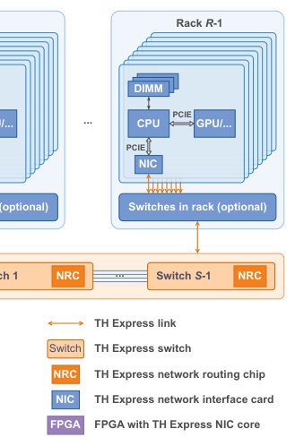

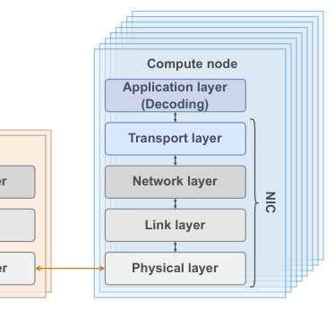
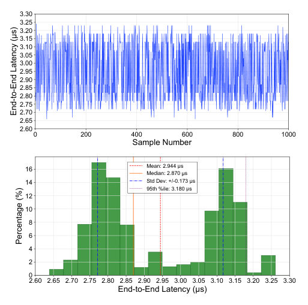
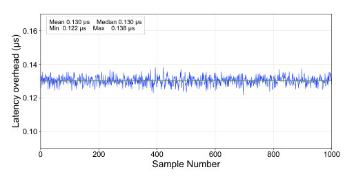
← Index · ← Previous · Next →
Authors: Jinbo Wang, Qihang Wang, Kun Chen
Type: theory · Category: quantum information and computing · PDF: https://arxiv.org/pdf/2608.03828v1
Analysis basis: full PDF text, analyzed in chunks
Topic relevance: 🔥 entanglement & information structure 4/5 · quantum measurements 2/5
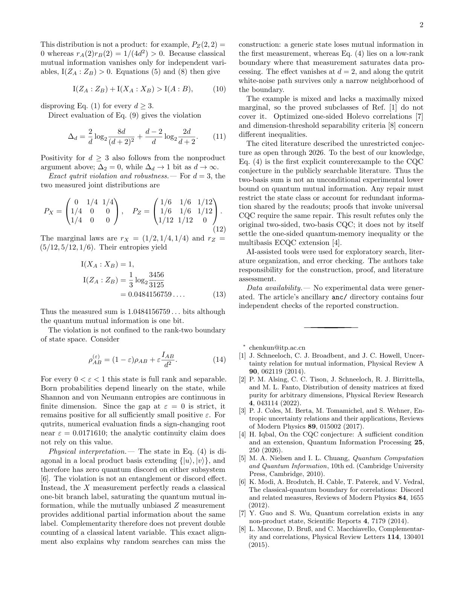
Summary. The paper disproves the Complementary-Quantum Correlation conjecture using an explicit, non-entangled (separable) state for local dimensions $d \geq 3$. By comparing classical mutual information sums from complementary measurements against the quantum mutual information, the authors demonstrate a measurable excess. This finding is significant because it shows that correlations violating this bound do not require entanglement or quantum discord.
Why it may be interesting. This work provides a fundamental theoretical challenge to existing bounds in quantum correlation theory by showing that simple separable states can violate conjectures previously thought to hold universally, impacting how we quantify non-classical correlations.
Main problem. The paper aims to disprove the Complementary-Quantum Correlation (CQC) conjecture, which posits an upper bound on the sum of classical mutual informations from complementary measurements relative to the quantum mutual information.
Main result. The CQC conjecture is disproved for all local dimensions $d \geq 3$ using a specific rank-two separable state. This violation occurs even without invoking entanglement or quantum discord.
Method. The authors analyze the bipartite state using two complementary projective measurements (computational and Fourier-conjugate bases) and calculate classical Shannon mutual informations to show their sum exceeds the premeasurement quantum mutual information.
Model / system. The study considers a general bipartite quantum state $ ho_{AB}$ defined for local dimension $d \geq 3$. The counterexample specifically utilizes an explicit rank-two separable state: $ ho_{AB} = rac{1}{2}|u angle\langle u|_A \otimes |v angle\langle v|_B + rac{1}{2}|v angle\langle v|_A \otimes |u angle\langle u|_B$.
Key observables. Classical mutual informations $I(Z_A : Z_B)$ and $I(X_A : X_B)$, compared against the quantum mutual information $I(A:B)$. The excess violation is quantified for qutrits as $\approx 0.048$ bits.
Important parameters / regimes. Local dimension $d \geq 3$. The violation persists and approaches a limit as $d o \infty$.
Assumptions / limitations. The counterexample state is separable, meaning the failure of the conjecture occurs in non-entangled regimes. The result only refutes the specific two-sided CQC inequality.
Paper structure. The paper introduces the CQC conjecture and then constructs a concrete counterexample using a separable state for $d \geq 3$. It calculates the relevant mutual information quantities to demonstrate the violation, concluding with the physical interpretation that the effect stems from complementary readouts of a shared classical variable.
Correlations measured in complementary local bases provide an experimentally accessible probe of the total correlations in a bipartite quantum state. The complementary-quantum correlation conjecture asserts that the sum of two such classical mutual informations never exceeds the premeasurement quantum mutual information. We disprove this conjecture in every local dimension $d\geq3$ with an explicit rank-two separable state. One of the two complementary measurements recovers the complete one-bit branch label, while the other retains additional classical correlation. For qutrits the excess is exactly $\frac13\log_2(3456/3125)=0.0484156759\ldots$ bits. Continuity yields full-rank separable violations. The effect therefore requires neither entanglement nor quantum discord; it arises from two complementary readouts of the same classical latent variable.
Authors: Abhishek Muhuri, Nirman Ganguly, Aditi Sen De, Indranil Chakrabarty
Type: theory · Category: quantum information and computing · PDF: https://arxiv.org/pdf/2608.03184v1
Analysis basis: full PDF text, analyzed in chunks
Topic relevance: 🔥 entanglement & information structure 4/5 · non-equilibrium dynamics 1/5
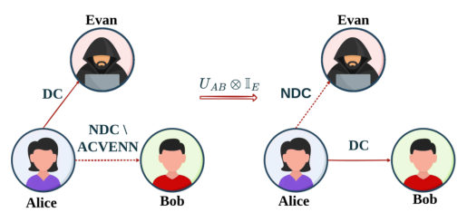
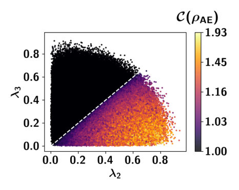
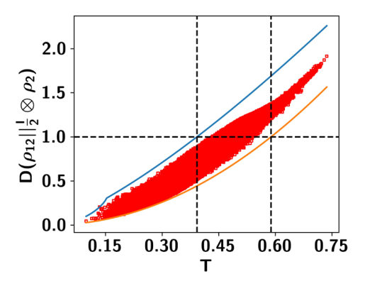
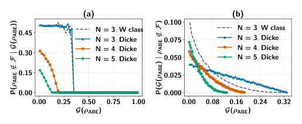
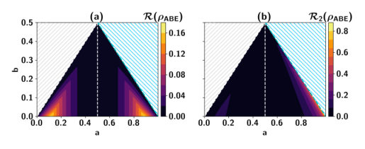
Summary. This paper introduces 'dense coding swapping,' a mechanism allowing the transfer of quantum information advantage between different communication channels using joint unitary operations. By deriving necessary and sufficient conditions based on entanglement measures like Schmidt coefficients, it provides a theoretical framework for enhancing network robustness against channel limitations or eavesdropping.
Why it may be interesting. This work provides rigorous mathematical tools to quantify how quantum advantages can be actively managed or transferred in complex multi-party quantum networks, which is crucial for designing robust quantum communication protocols.
Main problem. The paper characterizes 'dense coding swapping,' a novel multipartite entanglement-assisted task where quantum advantage (dense codeability) is transferred between communication channels using joint unitary operations.
Main result. Necessary and sufficient conditions for this swapping are derived in terms of Schmidt coefficients, showing that the process is possible while respecting constraints like the DC exclusion principle. The required resource state needs only a small amount of genuine multipartite entanglement.
Method. The analysis uses mathematical derivations based on conditional von Neumann entropy, Schmidt decomposition, and optimization techniques to find optimal unitary operators realizing the swap.
Model / system. The study focuses on $N$-party quantum states (e.g., three-qubit pure states or generalized W states) shared among legitimate parties, involving bipartite channels like $ ho_{AE}$ and $ ho_{AB}$.
Key observables. Dense Coding Capacity ($C(\cdot)$), conditional von Neumann entropy $S(A|B)$, Schmidt coefficients ($\lambda_i$), and Bloch correlation parameters.
Important parameters / regimes. The number of parties ($N$), the admixture parameter for noise ($s$), and unitary transformation parameters ($J_x, J_y, J_z$).
Assumptions / limitations. The analysis often assumes pure states initially, extending later to mixed states via white or colored noise admixtures. The process relies on applying specific two-qubit unitary operations.
Figures summary. Figures illustrate the schematic of DC swapping in tripartite settings and map out parameter spaces showing where quantum advantage is present or lost due to noise or state constraints.
Paper structure. The paper progresses from defining the core concept (DC advantage/exclusion principle) to deriving necessary conditions for pure states using Schmidt coefficients, then extends this analysis to mixed states under various noise models, and finally optimizes unitary parameters for maximum capacity.
We introduce a novel multipartite entanglement-assisted classical communication task, referred to as dense coding swapping, in which legitimate parties collaboratively swap the dense codeability from one communication channel to another through suitable joint unitary operations. Due to the dense coding (DC) exclusion principle, the scheme enhances the dense codeability of a target pair while simultaneously reducing it for a non-target branch in the network. This swapping capability has broader implications, as it may be viewed as a form of process swapping, distinct from resource swapping, while also providing a prevention measure when one of the receivers is compromised. We derive necessary and sufficient conditions, expressed in terms of the Schmidt coefficients, for three-qubit pure states to support DC swapping, while we obtain a sufficient criterion for mixed states using their Bloch correlation parameters. Furthermore, we identify the optimal two-qubit unitary operators capable of realizing the swapping of dense codeability between communication channels. We further examine the tolerance of these eligible states against both colored and white noise, demonstrating the resilience of the proposed task under environmental perturbations. We also show that multipartite states supporting DC swapping require only a small amount of genuine multipartite entanglement and that this requirement decreases with increasing system size.
Authors: Lingling Lao, Qiang Wang, Yuanqi Liu, Yantong Liu, Haowen Wang, Yitao Chen, Yankang Zhao, Zhenwei Wu, Wei Zhang, Yong Dong, Yingwen Liu, Mingche Lai, Junjie Wu
Type: both · Category: quantum information and computing · PDF: https://arxiv.org/pdf/2608.03948v1
Analysis basis: full PDF text, analyzed in chunks
Topic relevance: 🔥 QC/QI experiment 4/5 · quantum measurements 1/5




Summary. This paper introduces THQLink, an architecture designed to enable real-time Quantum Error Correction (QEC) decoding using coupled High-Performance Computing and QPU resources. By implementing a parallel window decoding strategy, the authors overcome the latency limitations of traditional decoders, enabling scalable fault tolerance for large quantum codes.
Why it may be interesting. This work directly addresses the engineering bottleneck in fault-tolerant quantum computing by providing a concrete, high-throughput hardware/software framework for error correction decoding.
Main problem. The core challenge is achieving real-time decoding of Quantum Error Correction (QEC) codes, which requires processing syndrome measurements within microsecond timescales to prevent computational backlogs.
Main result. The proposed THQLink architecture successfully demonstrates real-time decoding for the surface code up to distance 19 by integrating HPC resources with the QPU via a low-latency interconnect.
Method. The authors propose an architectural framework (THQLink) and compare different decoding strategies, notably developing a parallel-window decoder that scales better than global batch decoders in terms of latency vs. code distance.
Model / system. The work focuses on the surface code model for QEC, which protects logical qubits using physical qubits arranged on a 2D lattice. The implementation relies on coupling quantum processors (QPU) with general-purpose High-Performance Computing (HPC) resources.
Key observables. Round-trip latency ($\mu$s), decoding time per round ($1 \mu s$), logical error rate ($ ext{P}_{ ext{fail}}$), and code distance ($d$).
Important parameters / regimes. Physical error rate ($p$) (e.g., 0.1%, 0.3%), Code Distance ($d$), and the required real-time constraint ($\sim 1 \mu s$).
Assumptions / limitations. The parallel window decoding strategy trades a slight increase in logical error rate for a substantial reduction in latency, which is necessary for large code distances.
Figures summary. Figures illustrate the THQLink architecture and closed-loop data flow. Comparisons show that while global decoders fail to meet real-time constraints beyond moderate distances, the parallel window decoder maintains throughput by overlapping syndrome rounds.
Paper structure. The paper first establishes the necessity of low-latency QEC decoding. It then details the THQLink architecture and its performance metrics. Finally, it compares advanced decoding algorithms (Global vs. Parallel Window) to demonstrate scalable real-time operation for large surface codes.
Quantum error correction (QEC) is indispensable for building scalable fault-tolerant quantum computers. Effective QEC demands stringent real-time decoding: the decoder must process syndrome measurements and determine corrections within a time scale--typically on the order of microseconds, to avoid data backlog. Scaling to large number of logical qubits further necessitates significant computational resources. In this work, we propose an architecture, called \emph{THQLink}, for real-time decoding of quantum error correction codes using high-performance computing (HPC) resources. The network connecting the HPC and the control system of quantum processing unit (QPU) is built on TH-Express and can be adapted to different quantum technologies and their associated control stacks. We report a round-trip latency of 2.944 $μ$s on average, with an incremental overhead of 130 ns per additional hop. Using a parallel window strategy, we demonstrate real-time decoding (1 $μ$s per QEC round) of the surface code up to distance 19 using a matching-based decoder on CPUs. Our work presents a scalable framework for real-time decoding in fault-tolerant quantum computing. It can be readily applied to quantum-centric supercomputers that feature tight integration between QPU and HPC resources, thereby enabling efficient support for hybrid quantum-classical algorithms and computation-intensive workloads offloaded from the QPU.
Authors: Yuwei Lei, Zihua Song, Lin Chen, Mingju Liu
Type: theory · Category: quantum information and computing · PDF: https://arxiv.org/pdf/2608.03710v1
Analysis basis: full PDF text, analyzed in chunks
Topic relevance: 🔥 entanglement & information structure 4/5
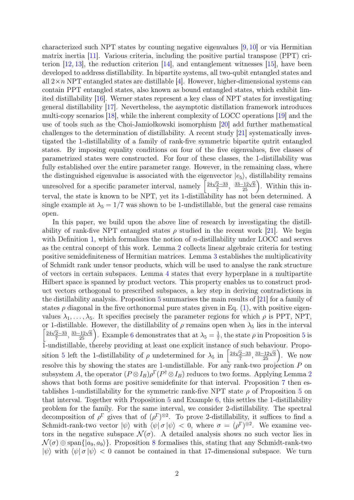
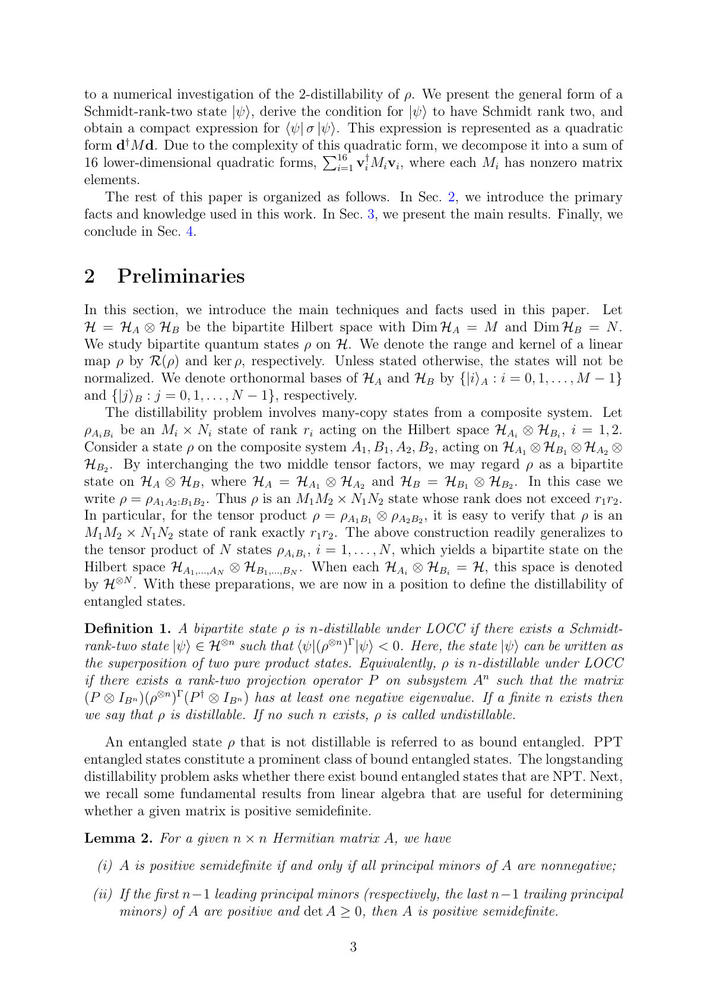
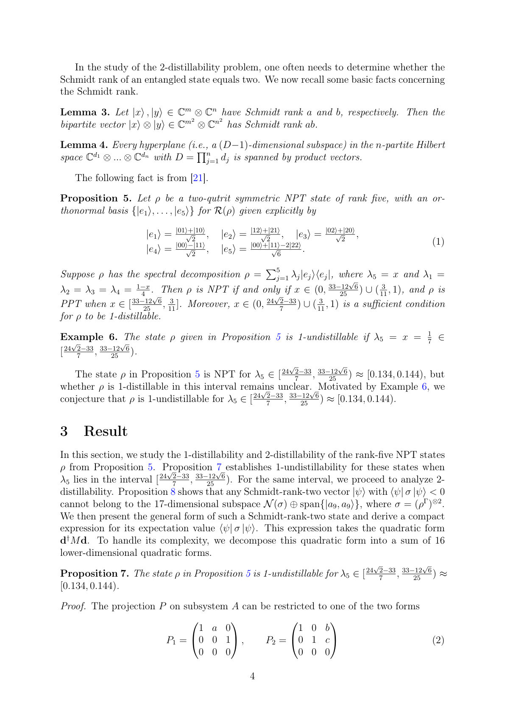
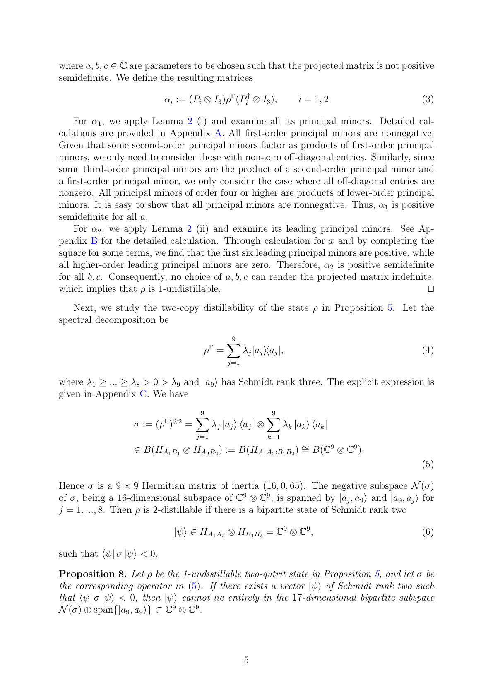
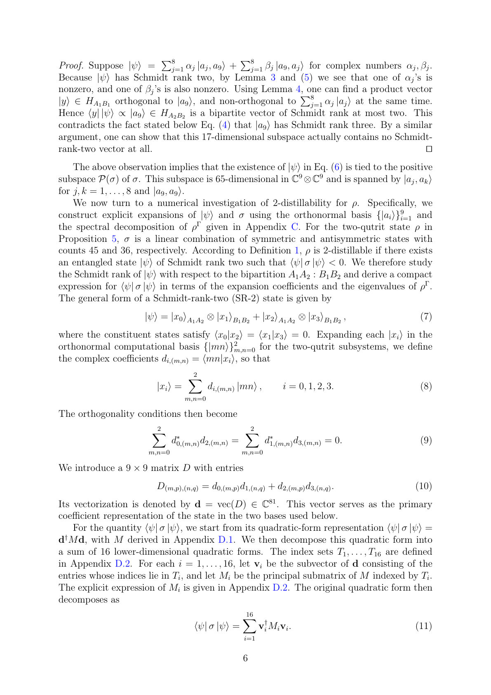
Summary. This paper rigorously analyzes the entanglement distillation capacity of a specific family of two-qutrit quantum states. It resolves the 1-distillability problem by proving that the states are undistillable over an open parameter interval. Furthermore, it establishes a structural obstruction concerning the necessary conditions for 2-distillability.
Why it may be interesting. This work provides rigorous mathematical tools (like analyzing principal minors and quadratic forms) to determine fundamental resource properties (entanglement distillability) in multi-partite quantum systems, which is central to quantum information theory.
Main problem. The paper investigates the distillability properties (1-distillability and 2-distillability) of a specific class of symmetric NPT quantum states.
Main result. They prove that for a certain parameter range, these states are 1-undistillable, and they characterize a structural obstruction preventing negative expectation values required for 2-distillability.
Method. The analysis uses criteria based on positive semidefiniteness of projected matrices (for distillability) and reformulating the problem as finding negative eigenvalues of quadratic forms associated with Schmidt-rank-two vectors.
Model / system. The system involves two-qutrit quantum systems described by a family of rank-five symmetric NPT states, $ ho$, parameterized by an eigenvalue $\lambda_5$.
Key observables. 1-distillability and 2-distillability; the expectation value $\langle\psi|\sigma|\psi angle$ for specific vectors $|\psi angle$.
Important parameters / regimes. The state is parameterized by eigenvalues, particularly $\lambda_5$, which must fall within certain intervals to satisfy NPT or PPT conditions.
Assumptions / limitations. The analysis relies on linear algebraic criteria (like positive semidefiniteness of minors) and the assumption that distillability can be determined by checking specific low-rank vectors.
Figures summary. Not specified, but the notes detail the construction of 16 large principal submatrices ($\mathbf{M}_1$ through $\mathbf{M}_{16}$) used to calculate a quadratic form expectation value.
Paper structure. The paper proceeds by establishing preliminaries on distillability criteria, then tackles 1-distillability using minor positivity checks, followed by a detailed structural analysis of the necessary conditions for 2-distillability involving quadratic forms and subspace projections.
Entanglement distillation is a fundamental task in quantum information processing. In this work, we investigate the distillability properties of a class of two-qutrit symmetric NPT states of rank five. We resolve the 1-distillability problem for this class by proving that the previously open interval of the eigenvalue parameter is 1-undistillable. For the 2-distillability, we uncover a structural obstruction showing that no Schmidt-rank-two vector has a negative expectation in the relevant subspace. We also perform numerical investigations to explore the 2-distillability beyond this obstruction.
Authors: Fabio Franchini, Salvatore Marco Giampaolo
Type: theory · Category: quantum information and computing · PDF: https://arxiv.org/pdf/2608.02745v1
Analysis basis: full PDF text, analyzed in chunks
Topic relevance: 🔥 entanglement & information structure 4/5
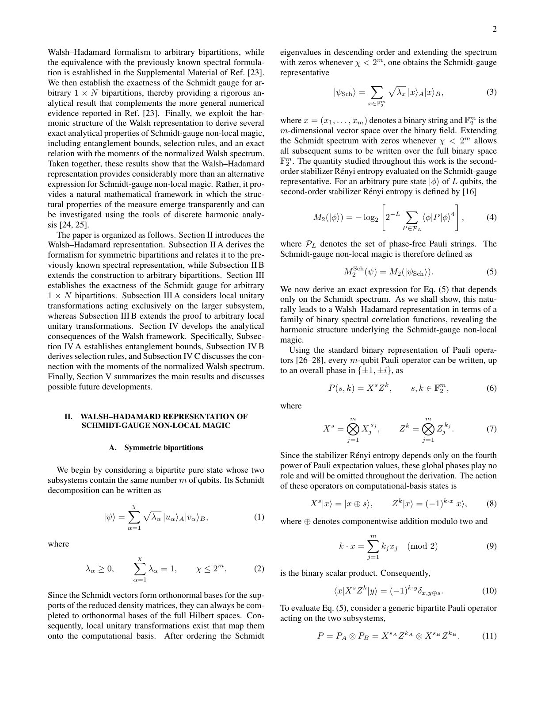
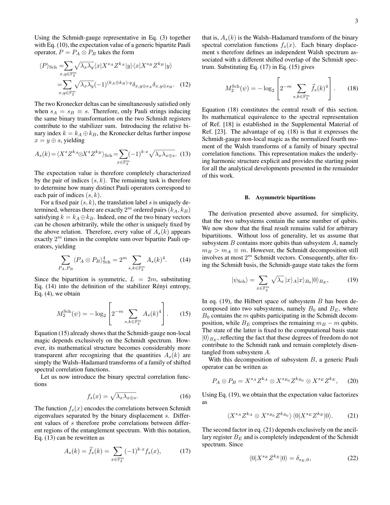
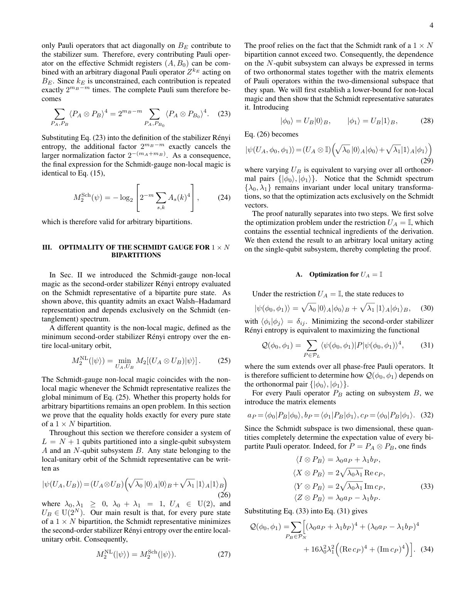
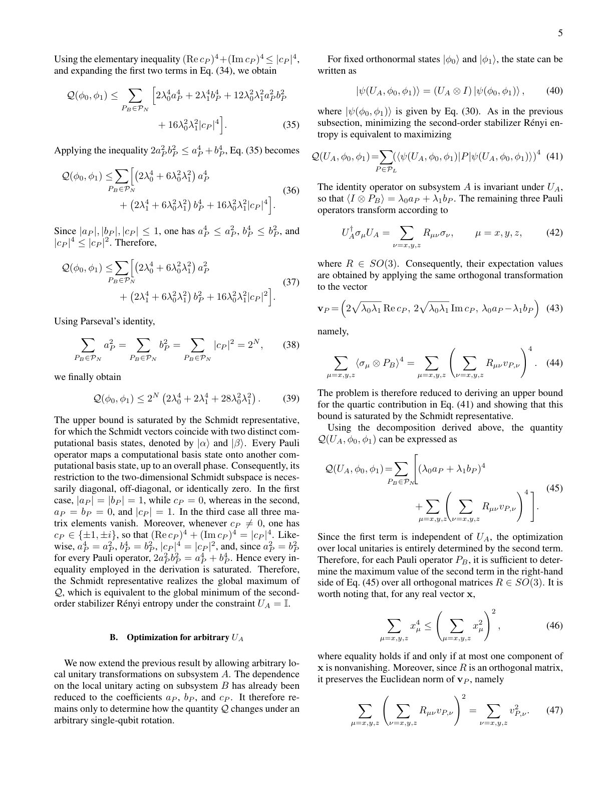
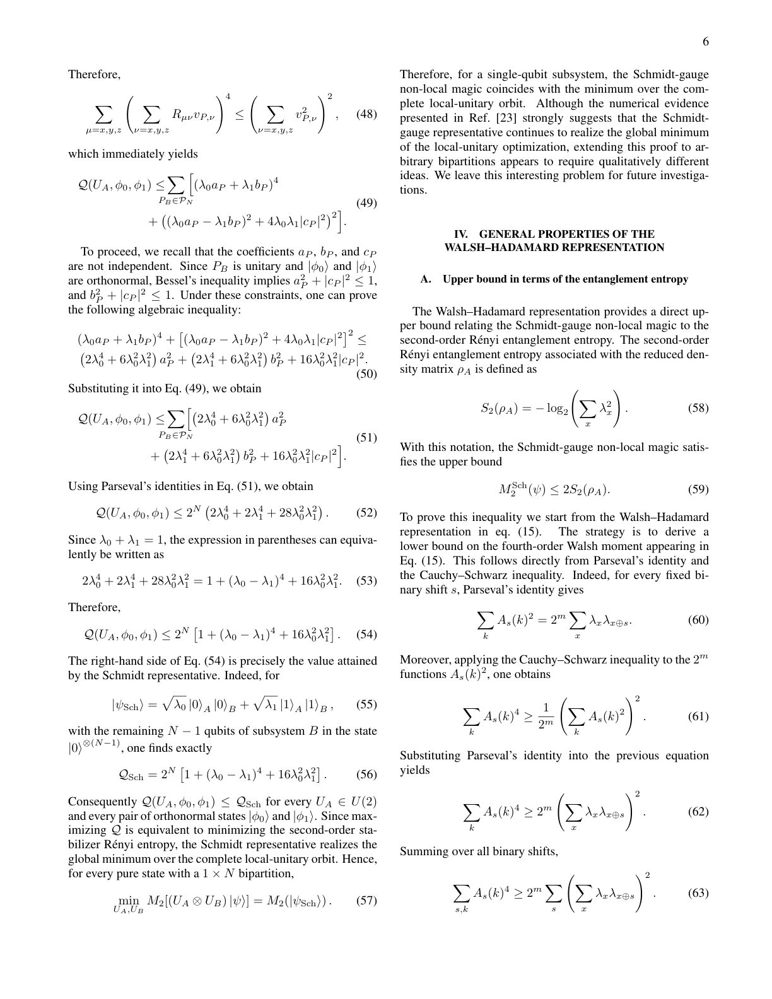
Summary. This paper develops a novel mathematical theory for quantifying 'Schmidt-gauge non-local magic,' a measure of genuine non-local correlations in quantum states. It achieves this by recasting the problem into the language of discrete harmonic analysis using the Walsh–Hadamard transform. The work establishes that this gauge provides an exact and mathematically rich characterization, particularly useful for understanding entanglement structure beyond simple spectral measures.
Why it may be interesting. It provides a powerful new analytical tool (discrete harmonic analysis) to study entanglement structure in quantum states, which is highly relevant for understanding resource quantification in quantum information theory.
Main problem. The goal is to mathematically isolate the genuinely non-local correlations within a quantum state's non-stabilizerness, distinct from local contributions.
Main result. The Schmidt-gauge formulation provides an exact characterization of this non-local magic, revealing an underlying discrete harmonic structure via the Walsh–Hadamard representation.
Method. The authors develop a mathematical theory by reformulating the optimization problem using the Walsh–Hadamard transform, connecting it to concepts from discrete harmonic analysis.
Model / system. The study analyzes bipartite pure quantum states $|\psi angle$, focusing on characterizing non-local correlations via entanglement spectra and stabilizer formalism.
Key observables. Schmidt-gauge non-local magic ($M_{ ext{Sch}}^2(\psi)$), Entanglement spectrum, Walsh–Hadamard coefficients, Second-order stabilizer Rényi entropy ($ ext{Rényi}_2$).
Important parameters / regimes. Bipartition structure (especially $1 imes N$ vs. general), Local unitary transformations ($U_A, U_B$), and the associated harmonic modes.
Assumptions / limitations. The initial focus is on symmetric bipartitions, though exactness for $1 imes N$ bipartitions is proven; extension to generic bipartitions remains an open problem.
Paper structure. The paper builds from defining the non-local magic via minimization over local unitaries, deriving its connection to the Schmidt spectrum, and finally establishing the rigorous mathematical framework using Walsh–Hadamard analysis.
While the full non-stabilizerness (magic) of a quantum state contains local, basis-dependent contributions, a non-local formulation based on a minimization over local unitaries isolates the component associated with genuinely non-local correlations. Within such a framework, the Schmidt-gauge formulation of non-local magic provides a direct connection between genuinely non-local non-stabilizer correlations and the entanglement spectrum of quantum many-body states. Building on the exact Walsh--Hadamard representation introduced in our accompanying Letter, we develop the mathematical theory associated with this formulation. We extend the formalism to arbitrary bipartitions, prove the exactness of the Schmidt gauge for arbitrary $1\times N$ bipartitions, and derive general analytical properties of Schmidt-gauge non-local magic, including entanglement bounds, selection rules, and exact relations with the moments of the normalized Walsh spectrum. This representation also allows to interpret non-local magic as the inverse participation ratio of the Walsh entanglement spectrum, thus relating it to a concentration measure in Walsh space. These results demonstrate that the Walsh--Hadamard representation reveals an underlying discrete harmonic structure that is hidden in the original spectral formulation and provides considerably more than an equivalent expression for Schmidt-gauge non-local magic. Rather, it furnishes the natural mathematical framework for its analytical investigation, placing the theory within the broader context of discrete harmonic analysis.
Authors: Jennifer Ahiable, Naga Bhavya Teja Kothakonda, Andreas Winter
Type: theory · Category: quantum information and computing · PDF: https://arxiv.org/pdf/2608.03390v1
Analysis basis: full PDF text, analyzed in chunks
Topic relevance: 🔥 entanglement & information structure 4/5
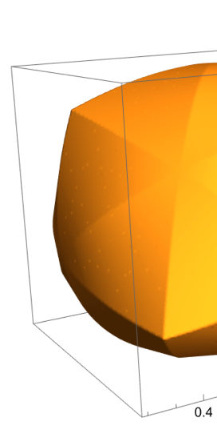
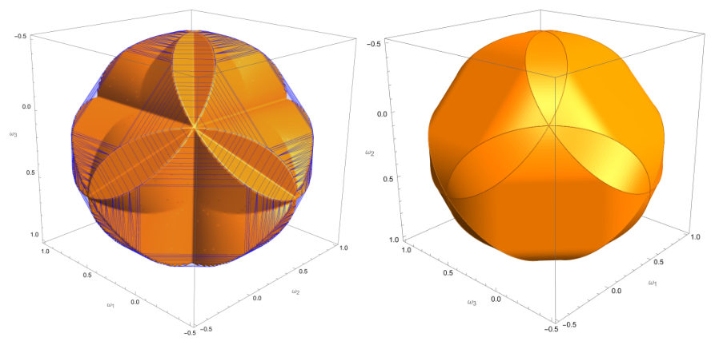
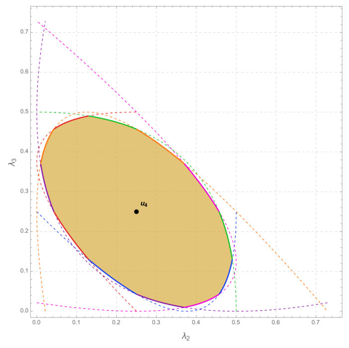
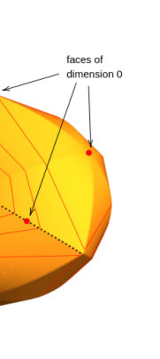
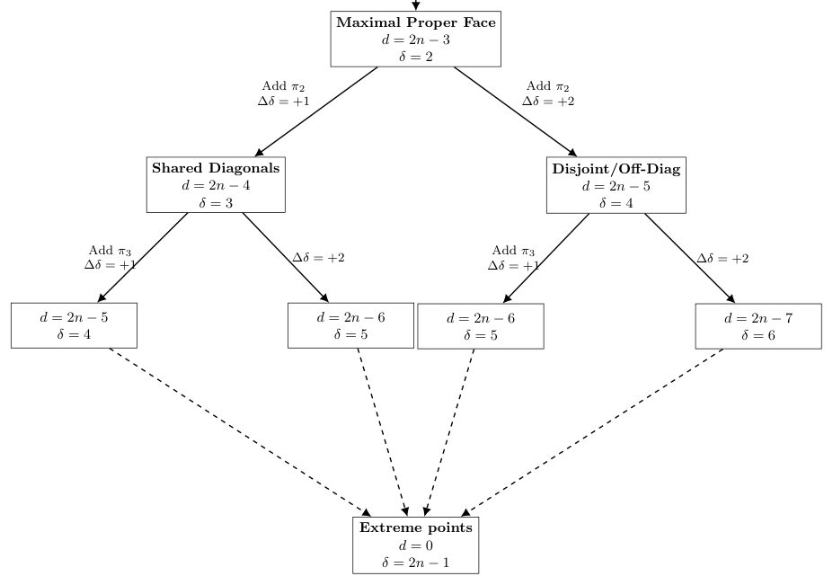
Summary. This theoretical paper analyzes the complex geometry of sets defining separable or positive partial transpose bipartite quantum states. It proves that the set of absolute PPT states forms a spectrahedron, while the absolutely separable states are more general semialgebraic sets. The work provides deep structural insights into these boundaries using advanced tools from convex and algebraic geometry.
Why it may be interesting. The rigorous geometric characterization of entanglement witnesses (like PPT/separability criteria) is fundamental for understanding quantum correlations and resource theories in quantum information.
Main problem. The paper investigates the geometric structure of the spectra for bipartite quantum states that satisfy absolute separability ($ ext{ASEP}{m,n}$) or are absolutely positive partial transpose ($ ext{APPT}$). It aims to characterize these sets using tools from convex geometry.
Main result. It proves that $ ext{APPT}{m,n}$ is a spectrahedron with exposed faces, while $ ext{ASEP}$ is generally only semialgebraic. Furthermore, it provides structural characterizations of the boundaries and extreme points for both sets.
Method. The methodology combines convex geometry (studying absolute convex sets and their spectra) with algebraic techniques involving polynomial determinants derived from permutation group actions on matrix representations.
Model / system. The focus is on bipartite quantum states $ ho \in M_m \otimes M_n$, specifically those satisfying the criteria of absolute separability or absolute PPT, which are constrained by global unitary transformations.
Key observables. Maximal attainable purity, minimal von Neumann entropy, relative spectral volume, and the geometric structure (spectrahedra/semialgebraic sets) of $ ext{APPT}{m,n}$ and $ ext{ASEP}$.
Important parameters / regimes. The dimensions $m$ and $n$ of the bipartite system; the indices related to permutations in $S_{m,n}$.
Assumptions / limitations. The analysis relies on establishing general geometric properties of absolute convex sets and utilizing advanced results concerning linear determinant preservers on symmetric matrices.
Paper structure. The paper first establishes general geometric properties for absolute convex matrix sets. It then applies these tools to characterize $ ext{APPT}{m,n}$ as a spectrahedron and $ ext{ASEP}$.}$ as semialgebraic. Finally, it uses permutation group theory and determinant polynomials to precisely map out the boundary structure of $ ext{APPT}_{m,n
We investigate the geometric structure of the set of spectra of bipartite absolute separable states ($\mathrm{ASEP}_{m,n}$) and absolute positive partial transpose states ($\mathrm{APPT}_{m,n}$), i.e., bipartite quantum states that remain separable or PPT respectively, under all global unitary transformations. First, we establish general geometric properties of absolute convex sets of matrices, their spectra and extreme points. Regarding absolute separability, we present a permutation-symmetric reformulation of the absolute PPT criterion and use it to demonstrate that $\mathrm{APPT}_{m,n}$ is a spectrahedron for all $m\leq n$: in particular, all its faces are exposed. In contrast, while $\mathrm{ASEP}_{2,n}$ is also a spectrahedron, we prove that in general $\mathrm{ASEP}_{m,n}$ is a semialgebraic set for all $m\leq n$. Furthermore, we provide a complete characterization of the faces and extreme points of $\mathrm{APPT}_{m,n}$ and demonstrate that the dimension of a face is determined by the rank of a certain matrix, with maximal proper faces having dimension $(mn-m-1)$. In the quantitative setting, we provide a rigorous lower bound on the maximal attainable purity of $\mathrm{APPT}_{m,n}$ via an inscribed polytope $\mathcal{P}_{m,n}$ and conjecture that the maximal purity of $\mathrm{APPT}_{m,n}$ (along with its spectra) coincides with the polytope for arbitrary dimensions except when $m=n=2$. Additionally, we also provide a rigorous upper bound on the minimal von Neumann entropy of $\mathrm{APPT}_{m,n}$ and demonstrate numerically that the minimum entropy eventually coincides with the polytope $\mathcal{P}_{m,n}$ as the local system dimension $n$ increases. Finally, we show that the relative spectral volume of $\mathrm{APPT}_{m,n}$ decays exponentially in $n$ by a constant multiplicative factor of the relative volume of the inscribed polytope $\mathcal{P}_{m,n}$.
Authors: Yuktee Gupta, Andrew C. Doherty, Sahand Mahmoodian
Type: theory · Category: quantum information and computing · PDF: https://arxiv.org/pdf/2608.03005v1
Analysis basis: full PDF text, analyzed in chunks
Topic relevance: quantum measurements 3/5 · quantum optics experiment 3/5 · QC/QI experiment 2/5 · entanglement & information structure 2/5 · measurement-induced transitions 2/5 · analog quantum simulation 1/5 · correlated / nonlocal dissipation 1/5 · driven-dissipative phase transition 1/5 · interference shaping light 1/5 · methods for driven-dissipative 1/5 · non-equilibrium dynamics 1/5
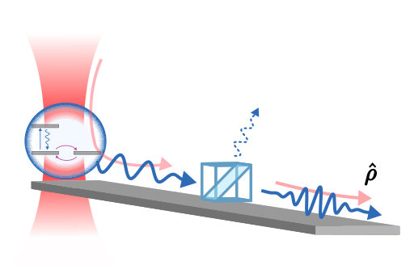
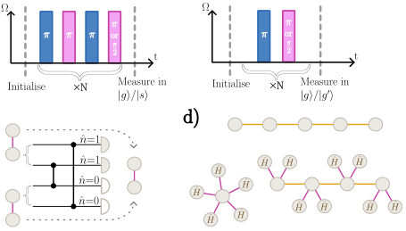
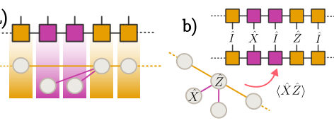
Summary. This work presents a comprehensive method to characterize the fidelity of entangled single-photon resources emitted from quantum emitters. By measuring first-order coherence functions, researchers can reconstruct the full state and analytically derive Pauli error probabilities associated with subsequent fusion measurements. This provides crucial guidelines for improving photon sources for fault-tolerant quantum computing.
Why it may be interesting. It provides a concrete, experimentally measurable pathway (via coherence functions) to quantify fundamental noise sources that limit fault-tolerant quantum computation in photonic platforms.
Main problem. The paper develops a method to compute Pauli error rates for entangled single-photon resource states generated from quantum emitters, bridging continuous field measurements with discrete qubit error models.
Main result. Analytic expressions for Pauli error probabilities are derived purely as functions of experimentally measurable parameters like first-order coherence function values and transmission coefficients.
Method. The authors use first-order coherence measurements ($G^{(1)}$) to reconstruct the full quantum state ($\hat{ ho}$) and then calculate stabilizer expectation values to determine the associated Pauli error maps for fusion operations.
Model / system. The system involves single-photon sources based on multi-level quantum emitters (three- or four-level), which generate entangled states used in photonic quantum computing circuits.
Key observables. First-order coherence function $G^{(1)}(x_1, x_2)$, Pauli error probabilities ($p_x, p_y, p_z$), and stabilizer expectation values ($\langle\hat{O} angle$).
Important parameters / regimes. Photon noise parameters, transmission coefficient $\eta$, and coupling constants derived from emitter properties.
Assumptions / limitations. The analysis assumes the ability to measure $G^{(1)}$ to reconstruct the state; error calculations are performed up to first order in experimental parameters.
Figures summary. Figures illustrate level schemes for three-level and four-level emitters, pulse sequences for generating entangled states (GHZ/cluster), and dual-rail fusion circuit setups.
Paper structure. The paper progresses from characterizing the emitted state using $G^{(1)}$ measurements to modeling the error process via Pauli maps applied during a fusion operation on multi-photon resource states.
We propose a scheme to compute Pauli error rates in photonics-based quantum error correction using experimental observables of single photons produced from quantum emitters. We show that first-order coherence measurements and first-order cross correlations, which can be implemented using photon counting, can extract single-photon and entangled single-photon wavefunctions in the presence of imperfections due to photon distinguishability, laser noise, and photon loss. Leveraging this, we show that the wavefunction of any entangled state of noisy photons produced from a single quantum emitter can be expressed in matrix-product-state form and can be used to analytically compute the expectation value of the stabilizer generators of the corresponding entangled state. From this we obtain analytic expressions for the Pauli error probabilities in terms of the photon noise parameters. Furthermore, we calculate Pauli error maps for entangled photons after undergoing Bell- state measurements in terms of these parameters. Our work provides a method to use experimental measurements to determine the required quality of photons produced from quantum emitters for fault-tolerant fusion-based photonics quantum computing.
Authors: Paul Raux, Alexander M. Maier, Udo Seifert
Type: theory · Category: statistical mechanics · PDF: https://arxiv.org/pdf/2608.03619v1
Analysis basis: full PDF text, analyzed in chunks
Topic relevance: correlated / nonlocal dissipation 3/5 · methods for driven-dissipative 3/5 · non-equilibrium dynamics 3/5 · Keldysh / 2PI / non-Gaussian methods 2/5 · entanglement & information structure 2/5 · non-equilibrium universality 2/5 · driven-dissipative phase transition 1/5 · quantum measurements 1/5
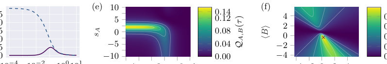
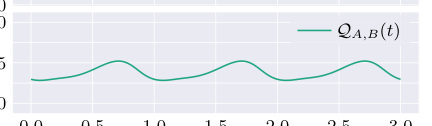
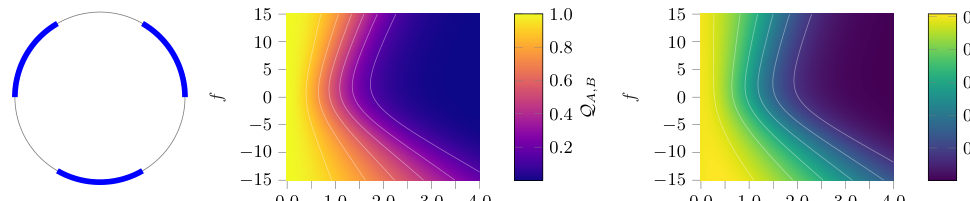
Summary. This paper establishes rigorous lower bounds on entropy production by analyzing the asymmetry of two-time correlation functions. It develops separate forms of these bounds for steady-state and time-dependent non-equilibrium processes. The results are highly relevant for characterizing irreversibility in complex physical systems using only experimentally accessible measurements.
Why it may be interesting. This work provides powerful theoretical tools for quantifying irreversibility and dissipation in complex systems using only measurable correlation functions, which is crucial for understanding open quantum systems where full state tomography is impossible.
Main problem. The primary goal is deriving rigorous lower bounds on entropy production (EPR) for systems where measurements are partial or coarse-grained.
Main result. Two key bounds are derived: one valid for Non-Equilibrium Steady States ($ ext{NESS}$) using arbitrary correlation lags, and another requiring the vanishing lag limit ($ au o 0$) for time-dependent processes.
Method. The analysis relies on exploiting the asymmetry of experimentally accessible two-time correlation functions between state observables ($A$ and $B$), relating this asymmetry to path weights and KL divergence bounds derived from fluctuation theorems.
Model / system. The theory applies to systems following Markovian dynamics or coupled overdamped Langevin equations. Examples include discrete-state Markov networks (e.g., four-state models) and continuous processes like particles on a ring potential.
Key observables. Entropy Production Rate ($ ext{EPR}$), two-time correlation function $C_{A,B}(t, au)$, and the correlation asymmetry $\chi_{A,B}(t, au)$.
Important parameters / regimes. Correlation lag ($ au$), time ($t$), system affinities, and potential amplitudes ($V_0$).
Assumptions / limitations. The underlying dynamics must be Markovian on some microscopic level. For time-dependent processes, the bound derivation requires taking the limit of vanishing correlation lag ($ au o 0$).
Figures summary. Figures illustrate the performance and optimization of the derived bounds (e.g., showing Quality Factors $Q_{A,B}( au)$ vs $ au$ or affinities) for both NESS and time-dependent driving scenarios.
Paper structure. The paper develops two main results: a bound applicable to steady states ($\hat{\sigma}_{A,B}( au) \le \sigma$) and a second bound derived in the vanishing lag limit ($\hat{\sigma}_{A,B}(t) \le \sigma(t)$). It then applies these bounds to various physical models (Markov networks, Langevin dynamics) to test their tightness.
Entropy production is a key property in stochastic thermodynamics. For partially observed and coarse-grained systems, its inference is challenging and typically rests on proven lower bounds. We derive two versions of such bounds based on the asymmetry of experimentally accessible two-time correlation functions of coarse-grained state observables. For non-equilibrium steady states, the bound is valid for arbitrary correlation lag. For time-dependent processes, it requires the limit of vanishing lag. These bounds hold true for any system that follows either a Markovian dynamics or a coupled set of overdamped Langevin equations on some underlying, unobservable level of description. We illustrate the bounds for both types of dynamics and discuss their optimization and potential tightness.
Authors: Sam Kuypers
Type: theory · Category: other · PDF: https://arxiv.org/pdf/2608.03736v1
Analysis basis: full PDF text, analyzed in chunks
Topic relevance: Keldysh / 2PI / non-Gaussian methods 3/5 · driven-dissipative phase transition 3/5 · non-equilibrium dynamics 2/5 · non-equilibrium universality 2/5 · Frenkel-Kontorova 1/5 · analog quantum simulation 1/5 · correlated / nonlocal dissipation 1/5 · measurement-induced transitions 1/5 · methods for driven-dissipative 1/5 · quantum measurements 1/5
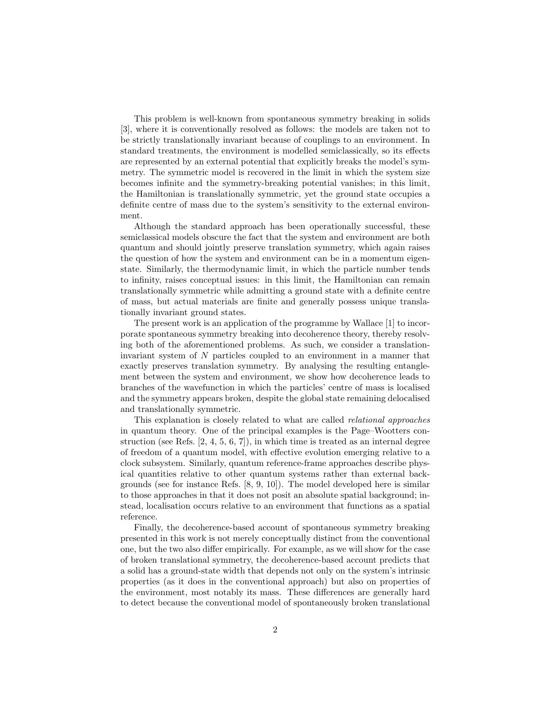
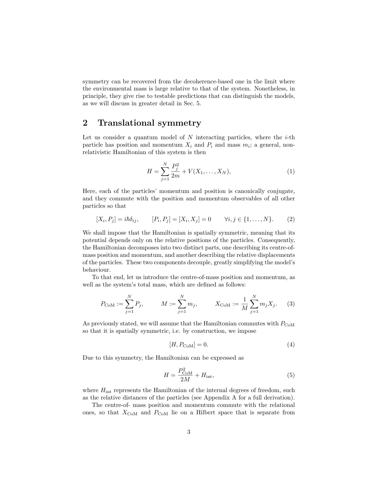
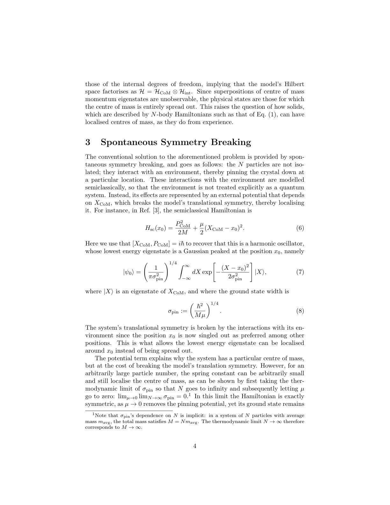
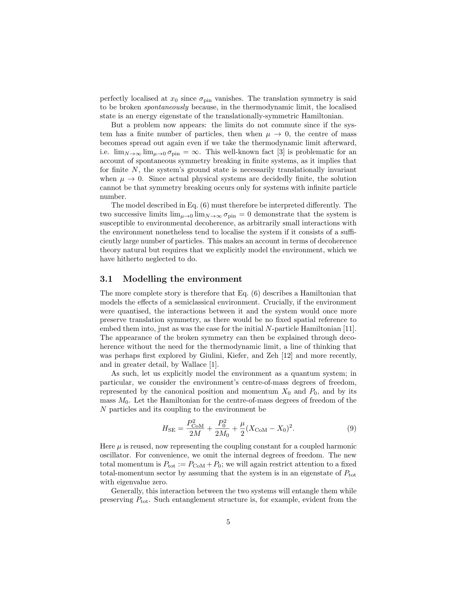
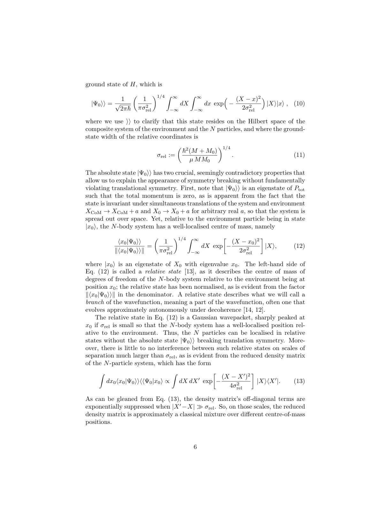
Summary. This theoretical paper resolves the conflict between observed particle localization in solids and the underlying translational symmetry of quantum mechanics. By quantizing the environment, the authors show that apparent symmetry breaking occurs only within localized 'decoherent branches,' while the total system state remains globally symmetric. This offers a finite-system resolution to long-standing issues in condensed matter theory.
Why it may be interesting. This work provides a rigorous quantum mechanical framework for understanding emergent classical-like phenomena, such as localization, using decoherence theory in a way that respects fundamental symmetries.
Main problem. The paper addresses how localized centers of mass appear in solid materials, reconciling this observation with quantum mechanical descriptions that are fundamentally translationally symmetric.
Main result. Localization arises within decoherent branches when the environment is quantized, allowing the total state vector to remain globally translationally symmetric.
Method. The authors analyze the system-environment coupling by quantizing the environment and examining the reduced density matrix dynamics relative to the environment's position.
Model / system. The model involves $N$ interacting particles (the system) coupled to a harmonic oscillator environment. The Hamiltonian is analyzed in terms of center-of-mass and environmental degrees of freedom.
Key observables. Ground-state width ($\sigma_{ ext{pin}}$), reduced density matrix off-diagonal terms, and the relative state $|\psi(x) angle$.
Important parameters / regimes. Environmental mass ($M_0$), coupling strength ($\mu$), and system size (finite vs. thermodynamic limit).
Assumptions / limitations. The core assumption is that quantizing the environment allows for a description where decoherence causes apparent symmetry breaking without violating global symmetries.
Paper structure. The paper contrasts conventional semiclassical approaches (relying on environmental potentials) with the novel approach of quantizing the environment. It develops mathematical tools to define relative states and shows how decoherence leads to localized branches while preserving global symmetry.
Solids appear to have localised centres of mass, yet many-body quantum theory describes them using translationally symmetric models that preclude localisation. Conventionally, this is resolved through spontaneous symmetry breaking by introducing an interaction with a semiclassical environment that breaks the symmetry. In the thermodynamic limit, the interaction can be removed while leaving the state localised. This, however, raises the question of how localisation arises outside the thermodynamic limit, i.e., in finite quantum systems (Wallace, 2018). Here, we show that, by quantising the environment, the localisation of finite systems occurs within decoherent branches, while the state vector of the composite system remains translationally symmetric. Our approach is analogous to the Page-Wootters construction (Page & Wootters, 1983) and quantum reference frames; moreover, we recover the semiclassical description as a limiting case while predicting experimentally distinguishable corrections away from this limit.
Authors: Zhiyao Lu, Shu-Heng Shao
Type: theory · Category: strongly correlated electrons · PDF: https://arxiv.org/pdf/2608.02728v1
Analysis basis: full PDF text, analyzed in chunks
Topic relevance: Keldysh / 2PI / non-Gaussian methods 3/5 · analog quantum simulation 3/5 · driven-dissipative phase transition 2/5 · methods for driven-dissipative 2/5 · Kondo & dissipative impurity 1/5 · correlated cavity matter 1/5 · entanglement & information structure 1/5 · exotic spin models in light-matter 1/5 · non-equilibrium dynamics 1/5
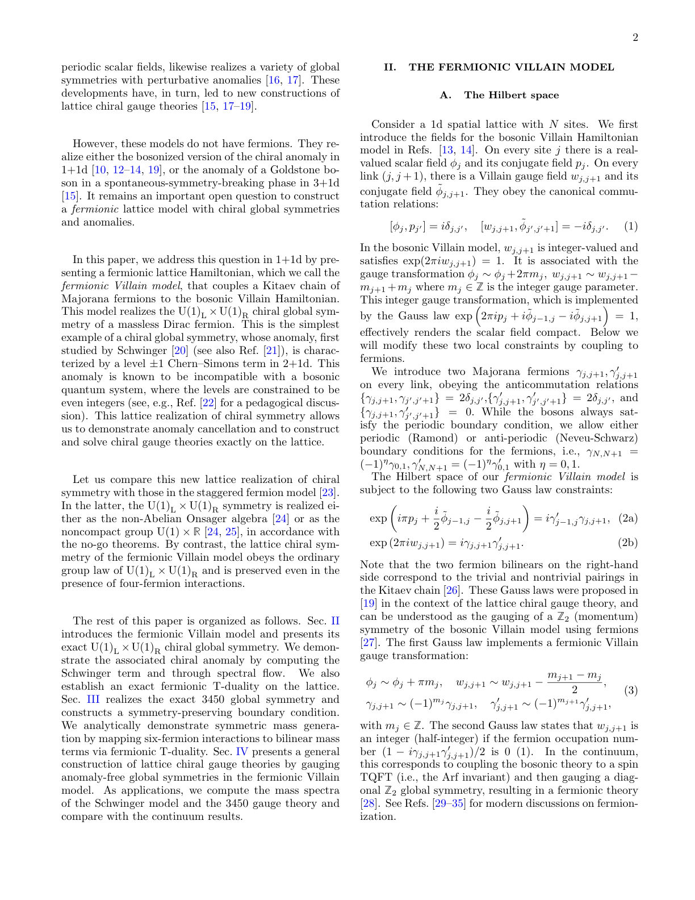
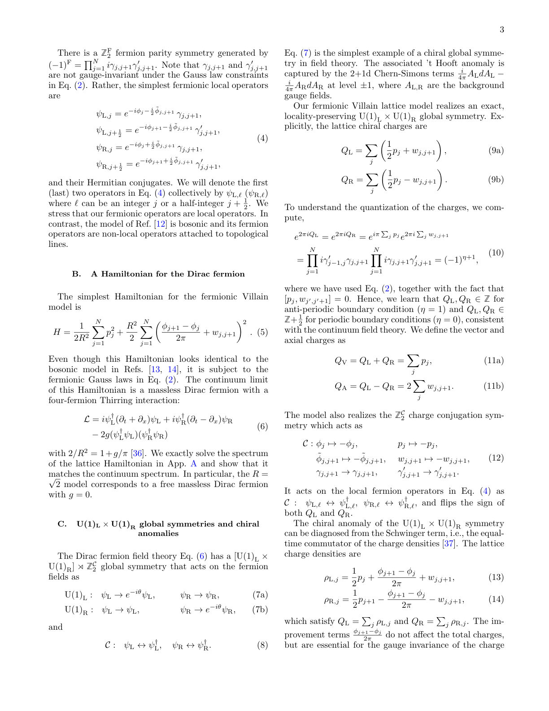
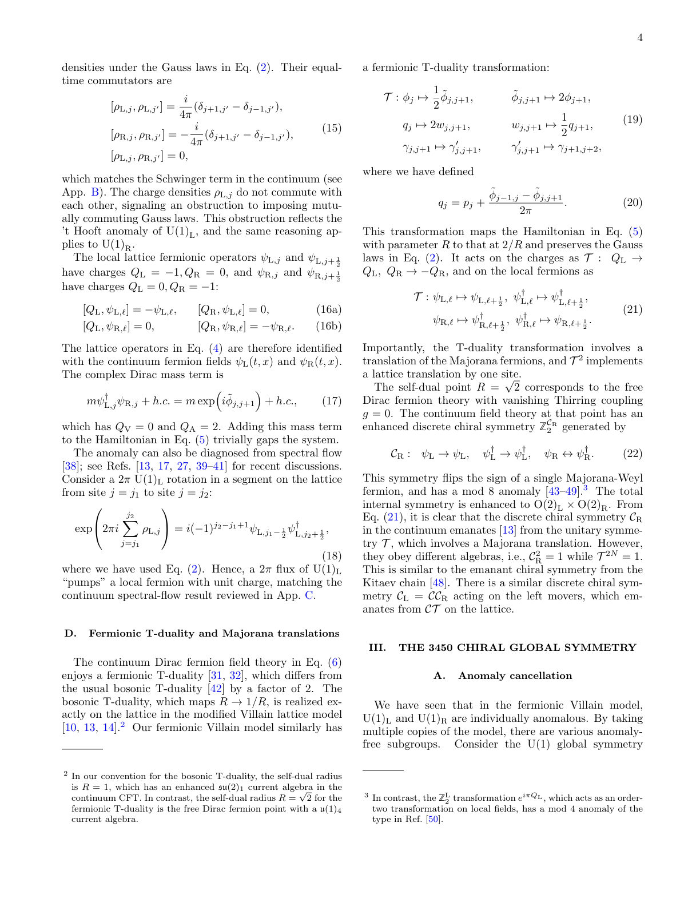
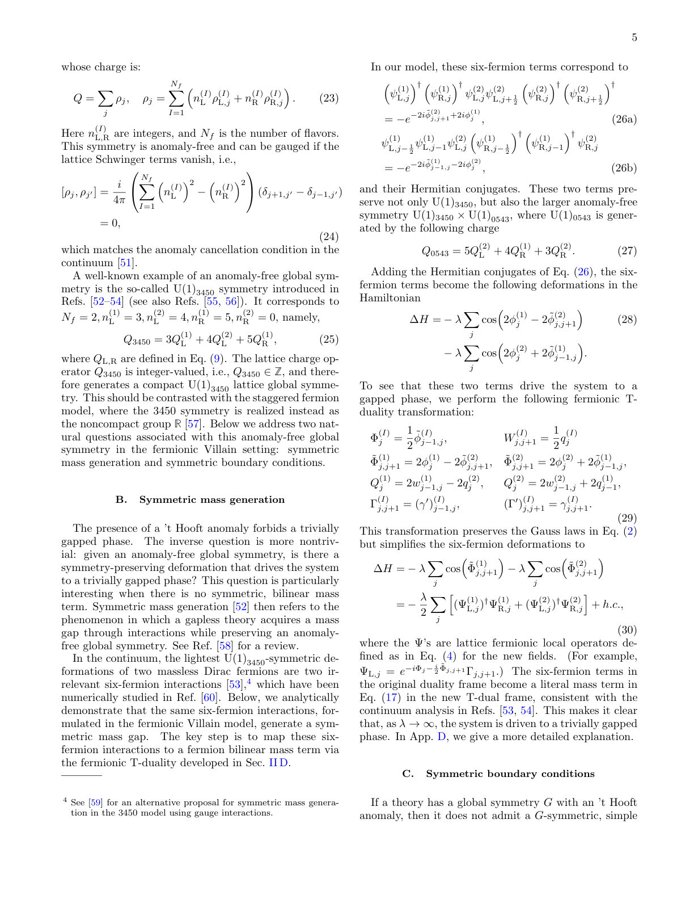
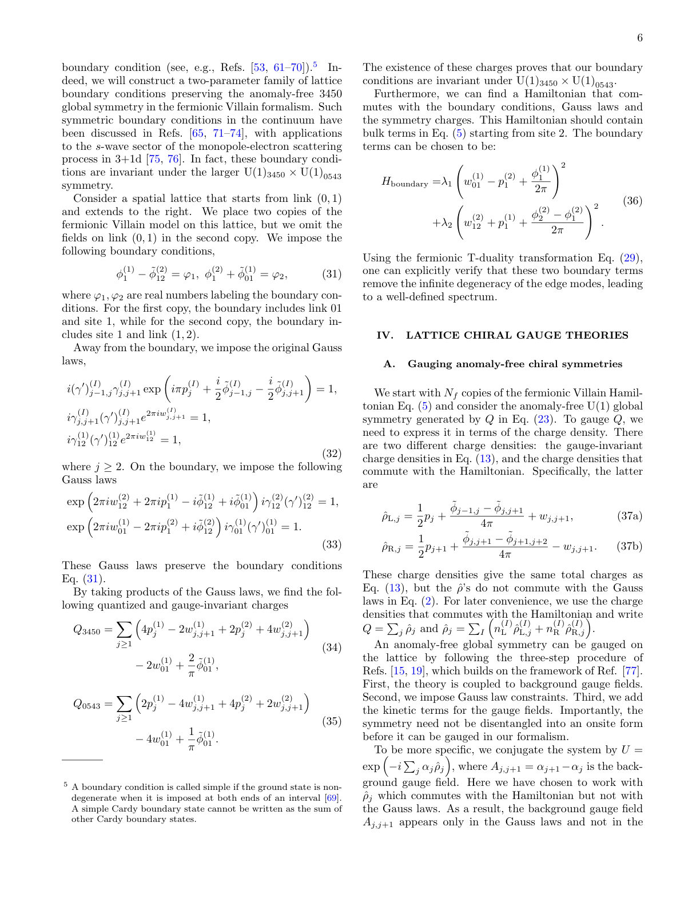
Summary. This paper develops a fermionic lattice model called the Villain model that successfully incorporates exact chiral symmetries and anomalies on a lattice. By coupling Majorana fermions to bosonic fields, the authors overcome theoretical constraints and demonstrate methods like T-duality to achieve symmetric mass generation. This work provides a powerful framework for studying lattice chiral gauge theories.
Why it may be interesting. While focused on QFT/Condensed Matter, the rigorous handling of topological invariants (anomalies) and symmetry protection in low dimensions is highly relevant for understanding superconducting phases or topological quantum materials studied using AMO techniques.
Main problem. The central problem is constructing a fermionic lattice Hamiltonian that exactly realizes chiral global symmetries and their associated anomalies while overcoming constraints like the Nielsen-Ninomiya no-go theorem.
Main result. The authors successfully construct such a model, demonstrating anomaly cancellation and providing methods to generate mass symmetrically via T-duality mapping of six-fermion interactions.
Method. The analysis employs techniques from lattice field theory, including the use of Villain bosons coupled to Majorana fermions, chiral charge quantization, and fermionic T-duality transformations.
Model / system. The system is the 'fermionic Villain model,' which couples a Kitaev chain of Majorana fermions to bosonic Villain fields. The Hamiltonian is governed by Gauss law constraints that couple these bosonic and fermionic degrees of freedom.
Key observables. Chiral charges ($Q_L, Q_R$), the $ ext{'t Hooft anomaly}$ (diagnosed via Chern-Simons terms or Schwinger terms), and the mass spectra of related models like the lattice Schwinger model.
Important parameters / regimes. The analysis explores various limits: continuum limit, deep infrared limit ($k=0$), and varying coupling strengths ($\lambda$).
Assumptions / limitations. The construction relies on the bosonic Villain fields being essential to evade no-go theorems; T-duality is used as a key mathematical tool for mapping interactions.
Figures summary. Not specified by notes, but the analysis involves deriving dispersion relations and effective Hamiltonians in various limits.
Paper structure. The paper systematically introduces the model via its Hamiltonian and Gauss laws, analyzes chiral symmetries and anomalies using charge quantization, demonstrates mass generation through T-duality, and concludes with applications to specific lattice gauge theories.
We present a fermionic lattice Hamiltonian that exactly realizes the $\mathrm{U(1)}_\mathrm{L}\times \mathrm{U(1)}_\mathrm{R}$ global symmetry and the associated chiral anomalies of a massless Dirac fermion in 1+1 dimensions. The construction couples Villain bosons to a Kitaev chain of Majorana fermions, where the bosonic fields are essential for evading Nielsen-Ninomiya-type no-go theorems. For two copies of our model, we realize the anomaly-free $\mathrm{U(1)}_{3450}$ global symmetry and construct symmetric boundary conditions. We analytically demonstrate symmetric mass generation by mapping the symmetry-preserving six-fermion interactions to fermion bilinear terms using fermionic T-duality. Finally, by gauging general anomaly-free global symmetries, we obtain a broad class of lattice chiral gauge theories. As nontrivial applications, we compute the mass spectra of the lattice Schwinger model and the 3450 gauge theory, finding agreement with the corresponding continuum results.
Authors: Miguel Á. Martínez-García, Johannes Feist, Diego Martín-Cano
Type: theory · Category: other · PDF: https://arxiv.org/pdf/2608.03307v1
Analysis basis: full PDF text, analyzed in chunks
Topic relevance: correlated cavity matter 3/5 · methods for driven-dissipative 3/5 · Tavis-Cummings & cavity-many-emitter 2/5 · Keldysh / 2PI / non-Gaussian methods 1/5 · analog quantum simulation 1/5 · correlated / nonlocal dissipation 1/5 · driven-dissipative phase transition 1/5 · entanglement & information structure 1/5 · interference shaping light 1/5 · non-equilibrium dynamics 1/5
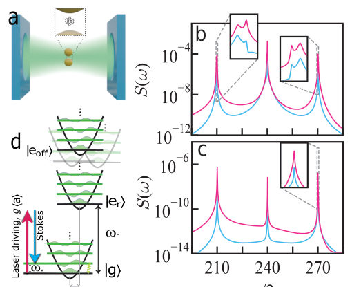
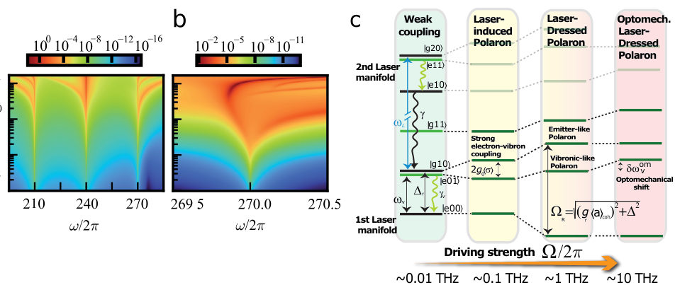
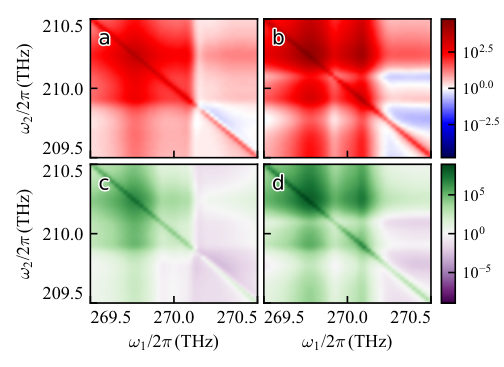
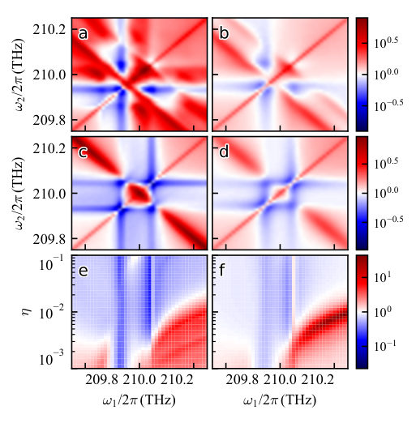
Summary. The paper develops a theoretical framework to study strong optomechanical coupling at the single-molecule level using SERS enhanced by hybrid plasmonic cavities. By analyzing photon correlations, the authors show that nonclassical signatures like antibunching can be used to optically characterize anharmonic vibrational potentials in molecules. This advances the field toward quantum control of molecular vibrations.
Why it may be interesting. This work directly bridges quantum optics with molecular spectroscopy by proposing a method to use single-photon statistics (antibunching) as an optical signature for anharmonicity, which is a core topic in advanced AMO physics and open quantum systems.
Main problem. The research aims to achieve and characterize single-molecule strong optomechanical coupling within Surface-Enhanced Raman Scattering (SERS) regimes, overcoming limitations posed by weak interactions and sample damage at high intensities.
Main result. Strong coupling is demonstrated using detuned emitter-hybrid cavity configurations, allowing the observation of enhanced spectral splittings and nonclassical photon statistics that reveal anharmonic vibrational modifications at single-molecule levels.
Method. The study employs open-system quantum dynamics simulations using Lindblad master equations to model dissipation in a coupled system, supplemented by calculating second-order photon correlation functions.
Model / system. The physical platform is a hybrid plasmonic cavity coupled to fluorescent molecules. The system is modeled via an electron-vibron Hamiltonian incorporating coupling terms ($g_{om}$) and analyzed using master equations for dissipation ($\dot{\hat{ ho}}$).
Key observables. Enhanced splittings in Stokes/anti-Stokes spectra, nonclassical photon statistics (bunching/antibunching), and violation of the Cauchy-Schwarz inequality.
Important parameters / regimes. Strong coupling regime where coherent energy exchange dominates dissipation; driving powers ($\Omega/2\pi \sim 1-10$ THz); cavity enhancement factor ($g_{hyb}/\kappa_{hyb}$).
Assumptions / limitations. The Markovian description of decay into environmental baths is assumed, and the use of a detuned emitter-hybrid cavity configuration is crucial to avoid high intensities.
Figures summary. Figures illustrate the hybrid cavity structure and energy levels; spectral maps show Stokes/anti-Stokes sidebands vs. driving strength ($\Omega$); $g^{(2)}$ maps compare resonant vs. cooperative models, highlighting nonclassical correlations for anharmonic vibrations.
Paper structure. The paper progresses by establishing the physical model (Hamiltonian/Master Equation), demonstrating how detuning enables strong coupling below damage thresholds, and finally using photon correlation measurements ($g^{(2)}$) to spectroscopically probe nonlinear vibrational potentials via antibunching signatures.
We identify enhanced strong coherent Surface-Enhanced Raman Scattering (SERS) interactions facilitated by hybridized metallo-dielectric cavities with a resonant fluorescent molecule. By illuminating a detuned electronic transition near saturation via a narrowband hybrid plasmonic mode, we observe enhanced splittings in the Stokes and anti-Stokes spectra, revealing strong optomechanical coupling and nonlinear vibrational modifications at intensities far below irreversible SERS damage thresholds. We compute the second-order photon correlations that allows identifying the nonclassical character associated to these strong optomechanical interactions and SERS configurations that enables them to optically characterize the anharmonic character of the vibrational modes.
Authors: Christian Partes, Jonas Auch, Eduard Heidt, Kirill Karpov, Florian Kiesel, Christian Groß
Type: experiment · Category: other · PDF: https://arxiv.org/pdf/2608.03547v1
Analysis basis: full PDF text, analyzed in chunks
Topic relevance: quantum measurements 3/5 · quantum optics experiment 3/5 · analog quantum simulation 2/5 · interference shaping light 2/5 · driven-dissipative phase transition 1/5 · measurement-induced transitions 1/5 · methods for driven-dissipative 1/5 · superradiant laser 1/5
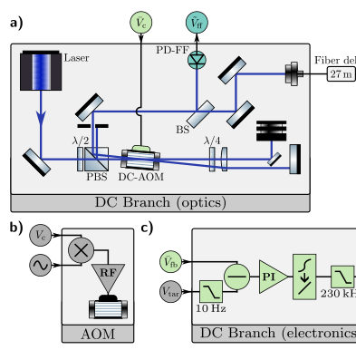
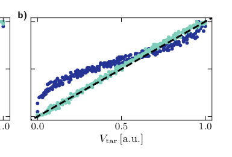
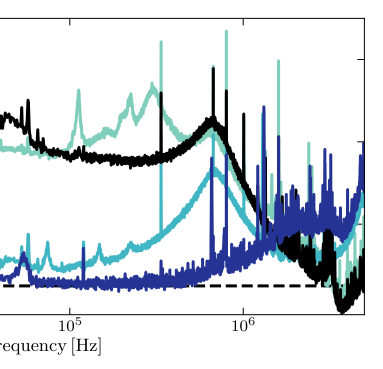
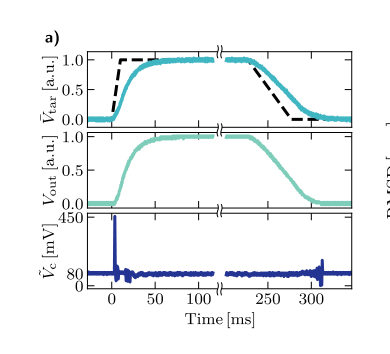
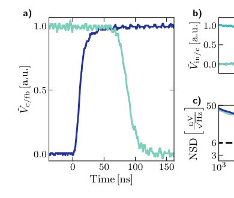
Summary. The paper presents an advanced experimental technique to achieve ultra-low relative intensity noise in high-power lasers using Acousto-Optic Modulators (AOMs). By integrating a sophisticated control scheme involving both feedback and feedforward paths, the system stabilizes laser intensity up to the MHz range. This capability is crucial for next-generation quantum experiments involving light ultracold atoms.
Why it may be interesting. This work directly addresses a critical technical requirement for modern AMO experiments, such as optical lattice physics, where laser intensity stability is paramount for trapping and manipulating ultracold atoms.
Main problem. The development of high-power laser sources that maintain ultra-low relative intensity noise (RIN) while allowing dynamic control up to the MHz frequency range.
Main result. The authors achieved an ultra-low relative intensity noise level down to $-155 ext{ dB Hz}^{-1}$ even at several hundred kHz by implementing a combined feedback and feedforward control system on an AOM platform.
Method. A novel control architecture combining two standard feedback loops with one feedforward branch, implemented using photodiodes for measurement and FPGA/analog electronics for signal processing.
Model / system. The experiment uses Acousto-Optic Modulators (AOMs) driven by RF mixers. The system incorporates a slow DC control loop for low-frequency stabilization and a fast AC loop, alongside feedforward compensation to suppress noise across a wide bandwidth.
Key observables. Relative Intensity Noise (RIN) spectrum, measured down to $-158 ext{ dB Hz}^{-1}$ at the electronic limit; closed-loop bandwidth up to $1.2 ext{ MHz}$.
Important parameters / regimes. Noise suppression of $>30 ext{ dB}$; control bandwidth extending into the $ ext{MHz}$ range; AOM reaction times down to $65 ext{ ns}$.
Assumptions / limitations. The system relies on linearizing the non-linear AOM response using Gain-Scheduling and Piecewise Linear Approximation (PLA) algorithms.
Figures summary. Figures illustrate the experimental setup, detailing beam paths for DC and AC control branches. Other figures compare RIN spectra across different control regimes (free-running vs. fully controlled).
Paper structure. The paper details the necessity of low-noise lasers, describes the physical AOM system, outlines the advanced signal processing combining feedback/feedforward loops, presents measurements showing noise suppression at high frequencies, and concludes with performance metrics.
High-power laser sources that exhibit low relative intensity noise and allow simultaneous dynamic control of their light level are required for a broad range of applications in various fields of physics. Acousto-optic modulators (AOMs) are widely used for active power stabilization and regulation due to their simple drive electronics requirements and high optical power handling capability in free-space. However, the rather slow propagation speed of the sound wave within the AOM crystal typically limits their control bandwidth to a few hundred kHz. In this work, we present a novel AOM-based control system that is capable of significantly suppressing intensity noise of high-power lasers up to the MHz range. By combining two standard feedback loops with one feedforward control branch and optimizing the beam path in the AOM crystal, ultra-low relative intensity noise levels down to $-155\, \text{dB}\,\text{Hz}^{-1}$ even at several hundred kHz are achieved. Our results are relevant for applications that require ultra-low intensity noise at Fourier frequencies up to the MHz range, such as optical lattice experiments with light ultracold atoms.
Authors: Thomas Copie, Ofer Firstenberg, G. P. Teja, Radim Filip, Hanna Le Jeannic
Type: theory · Category: quantum information and computing · PDF: https://arxiv.org/pdf/2608.03658v1
Analysis basis: full PDF text, analyzed in chunks
Topic relevance: correlated cavity matter 3/5 · correlated / nonlocal dissipation 2/5 · entanglement & information structure 2/5 · Keldysh / 2PI / non-Gaussian methods 1/5 · Tavis-Cummings & cavity-many-emitter 1/5 · analog quantum simulation 1/5 · driven-dissipative phase transition 1/5 · interference shaping light 1/5 · methods for driven-dissipative 1/5 · non-equilibrium dynamics 1/5
Summary. The paper details a method to generate high-quality, non-Gaussian photonic states by coupling a single quantum emitter to a waveguide. By employing squeezed vacuum inputs, the authors demonstrate the creation of bimodal states that allow for the extraction of complex resources like large squeezed cat states. This work advances quantum light sources beyond simple photon addition/subtraction protocols.
Why it may be interesting. This work directly addresses quantum state engineering in photonic systems, providing concrete protocols for generating complex non-Gaussian resources (like cat states) necessary for fault-tolerant quantum computation and quantum metrology.
Main problem. The research focuses on deterministically and heraldedly generating non-Gaussian states of light using a single quantum emitter coupled to a chiral waveguide.
Main result. Using squeezed-vacuum inputs, the protocol generates bimodal non-Gaussian states from which higher-stellar-rank states, such as large squeezed cat states, can be extracted with high purity and success rates.
Method. The analysis employs virtual cavity formalism, linear mode rotation to analyze joint density matrices in different output bases, and utilizes fidelity witnesses combined with Wigner negativity to bound the stellar rank of generated states.
Model / system. The system consists of a two-level quantum emitter (TLS) coupled to a one-dimensional, ideally chiral waveguide. The interaction is modeled using an input-output relationship derived from the Hamiltonian describing the TLS and the field modes.
Key observables. Wigner negativity volume, Stellar rank ($r^*$), Purity of partial density matrices ($ ho_{1, heta}, ho_{2, heta}$), and the core state $ ho_{ ext{core}}$.
Important parameters / regimes. Coupling rates ($\gamma$), frequency separation ($\omega_0$), input field type (coherent vs. squeezed vacuum), and the ratio of average photon number to coupling strength ($\langle n angle\gamma au$).
Assumptions / limitations. The initial assumption is an ideal chiral waveguide; limitations are analyzed regarding imperfect coupling and non-chiral waveguides.
Figures summary. Figure 1 illustrates the protocol scheme using pulsed Gaussian states. Figure 2 shows properties of the reduced state $ ho_1$ (Impurity, Wigner negativity volume) versus input amplitude $|\alpha|$.
Paper structure. The paper progresses by first establishing the physical model and deterministic generation via coherent pulses; it then advances to utilizing squeezed-vacuum inputs to access higher-rank states; finally, it details advanced diagnostics like stellar rank bounding and discusses practical implementation considerations.
We investigate the generation of deterministic and heralded non-Gaussian states of light, using a single two-level system coupled to a chiral waveguide. We study the case of a single two level system driven by pulsed coherent and squeezed drive in a chiral waveguide. For coherent input pulses, we show that the emitter can deterministically generate Wigner-negative states, albeit of limited rank. Going beyond, using squeezed-vacuum inputs, we show that the interaction produces bimodal non-Gaussian states from which higher-stellar-rank states, including large squeezed cat states, can be experimentally extracted with a substantial success rate. Motivated by experimental implementations, we further analyze the effect of imperfect coupling and of the intrinsic $50\%$ collection limit of symmetric, non-chiral waveguides. Finally, we propose a simple interferometric scheme that recovers an effectively chiral interaction in an otherwise bidirectional waveguide.
Authors: Olga Arroyo-Gascón, Manuel Pino
Type: theory · Category: disordered systems and neural networks · PDF: https://arxiv.org/pdf/2608.02916v1
Analysis basis: full PDF text, analyzed in chunks
Topic relevance: methods for driven-dissipative 3/5 · driven-dissipative phase transition 2/5 · non-equilibrium dynamics 2/5 · non-equilibrium universality 2/5 · Frenkel-Kontorova 1/5 · Keldysh / 2PI / non-Gaussian methods 1/5 · Kondo & dissipative impurity 1/5 · analog quantum simulation 1/5 · correlated / nonlocal dissipation 1/5
Summary. This work numerically analyzes chaos and diffusion in twisted bilayer graphene, demonstrating that the system exhibits quantum chaos even at large twist angles. The key finding is that border-induced scattering acts as a powerful single-particle mechanism, inducing diffusive behavior regardless of lattice commensurability. This highlights the crucial role of sample boundaries in determining electronic transport properties.
Why it may be interesting. The findings on how structural imperfections (borders) induce universal quantum chaotic behavior in a 2D material are highly relevant to understanding open quantum systems where boundaries play a critical role.
Main problem. The study investigates the emergence of quantum chaos and diffusive transport mechanisms within finite-sized Twisted Bilayer Graphene (TBG) flakes.
Main result. Chaos is robustly induced in TBG systems regardless of lattice commensurability or rotation angle, with border scattering identified as a dominant single-particle mechanism causing diffusion.
Method. The analysis employs numerical diagonalization of the tight-binding Hamiltonian and uses Random Matrix Theory diagnostics (like level spacing ratios) alongside Thouless energy scaling to characterize spectral statistics.
Model / system. The system is Twisted Bilayer Graphene modeled by a tight-binding Hamiltonian. The study examines flakes with both commensurate and incommensurate twist angles, focusing on the role of boundaries.
Key observables. Level spacing ratios ($\langle r angle$), probability distribution $P(r)$, Thouless energy ($E_{Th}$), and dimensionless conductance ($g$).
Important parameters / regimes. Twist angle ($ heta$), system size ($N$), and the nature of scattering (border-induced vs. intrinsic).
Assumptions / limitations. The analysis often assumes random sliding between layers for comparison, and specific energy ranges are focused on for robust averaging.
Figures summary. Figures show level statistics ($\langle r angle$) dependence on angle/size, K-correlator plateaus confirming GOE behavior, and scaling plots demonstrating $E_{Th} \sim 1/\sqrt{N}$ consistent with border scattering.
Paper structure. The paper progresses by establishing the model (Hamiltonian), applying chaos diagnostics (level statistics vs. GOE/Poisson) across different angles, quantifying diffusion via Thouless energy scaling, and concluding that boundary effects dominate the chaotic behavior.
We numerically analyze chaos and diffusion in experimentally-relevant models of twisted bilayer graphene. Our results indicate that finite systems at both commensurate and incommensurate rotation angles exhibit chaos. We compute the Thouless energy of the system at intermediate twist angles to further understand the diffusive processes associated with the chaotic nature of the spectrum. We find that the mean free path of the non-interacting electrons scales with the system size, which is consistent with diffusive processes caused by border-induced scattering. In summary, our results show the role of borders as a experimentally relevant single-particle scattering mechanism, which is much stronger than in single-layer graphene and induces chaos and diffusion regardless of the rotation angle and the lattice commensurability.
Authors: Nathan Silvano, Emilio Hernandez-Garcia, Cristóbal López
Type: theory · Category: statistical mechanics · PDF: https://arxiv.org/pdf/2608.03317v1
Analysis basis: full PDF text, analyzed in chunks
Topic relevance: Keldysh / 2PI / non-Gaussian methods 3/5 · driven-dissipative phase transition 3/5 · non-equilibrium dynamics 2/5 · non-equilibrium universality 2/5 · Frenkel-Kontorova 1/5 · analog quantum simulation 1/5 · correlated / nonlocal dissipation 1/5 · methods for driven-dissipative 1/5
Summary. This paper establishes a general continuum hydrodynamic framework for complex proliferating active matter by deriving mean-field equations from a detailed lattice master equation. Using the von Mises ansatz, they successfully model collective behaviors like flocking and predict pattern formation instabilities (Turing/Hopf) that match numerical simulations.
Why it may be interesting. While focused on classical active matter, the rigorous derivation of macroscopic field theories from microscopic stochastic rules, coupled with stability analysis (Turing/Hopf), mirrors techniques used in modeling non-equilibrium quantum many-body dynamics or open quantum systems far from equilibrium.
Main problem. Developing a general continuum theory for proliferating active matter that incorporates self-propulsion, birth, death, and nonlocal competition.
Main result. The derived hydrodynamic framework successfully reproduces key dynamical regimes, including Turing and Hopf instabilities, confirming its applicability to diverse active systems.
Method. The authors derive mean-field evolution equations from a microscopic master equation by taking the continuum limit and employing a von Mises ansatz closure for angular correlations.
Model / system. The model describes self-propelled particles on a lattice undergoing stochastic processes (birth, death, competition) alongside directional hopping. The dynamics are mapped onto coupled hydrodynamic equations for particle density and polarization fields.
Key observables. Particle density ($ ho$), Polarization vector field ($P$), Mean occupation numbers $\langle n_{ heta}^x angle$, and instability thresholds (Turing/Hopf).
Important parameters / regimes. Net growth rate ($\mu$), Péclet number ($Pe$), Diffusion coefficients ($D_T, D_R$).
Assumptions / limitations. The primary approximations include the mean-field factorization of averages and the use of the von Mises ansatz to close the resulting hierarchy of moment equations.
Figures summary. Figure D1 shows simulation results for a quasi-one-dimensional system, demonstrating hysteretic behavior (bistability) when sweeping parameters like the growth rate ($\mu$) across instability lines for specific Péclet numbers ($Pe=5$ and $Pe=7.5$).
Paper structure. The paper progresses from defining the microscopic lattice model via a master equation to deriving mean-field continuum equations, applying the von Mises closure to obtain coupled hydrodynamic equations for density ($ ho$) and polarization ($P$), and finally analyzing these equations in simplified 1D systems to study pattern formation and bistability.
We develop a continuum theory for proliferating active matter starting from a microscopic stochastic model of self-propelled particles undergoing birth, death, and nonlocal competition. Beginning from the master equation, we derive mean-field evolution equations for the particle density and polarization fields and close the resulting hierarchy through a von Mises ansatz, providing a coupled hydrodynamic description applicable to a broad class of proliferating active systems. As an application, we study the recently introduced Active Brownian Bug model, in which the form of flocking emerges despite the absence of explicit alignment interactions. Linear stability analysis predicts both Turing and Hopf instabilities, whose analytical thresholds agree with numerical simulations. The continuum model reproduces the principal dynamical regimes of the underlying particle system, including homogeneous states, stationary periodic clusters, and coherently propagating flocking states. These results establish a general continuum framework for proliferating active matter and provide a physical interpretation of collective motion driven by the interplay between activity and population dynamics.
Authors: Gabriel Cuomo, Simone Giombi, Luigi Tizzano
Type: theory · Category: strongly correlated electrons · PDF: https://arxiv.org/pdf/2608.03704v1
Analysis basis: full PDF text, analyzed in chunks
Topic relevance: non-equilibrium universality 3/5 · Kondo & dissipative impurity 2/5 · entanglement & information structure 2/5 · non-equilibrium dynamics 2/5 · Keldysh / 2PI / non-Gaussian methods 1/5 · analog quantum simulation 1/5 · correlated / nonlocal dissipation 1/5 · driven-dissipative phase transition 1/5 · methods for driven-dissipative 1/5
Summary. This paper investigates the behavior of anomalous dimensions associated with line defects in conformal field theories when moving from Euclidean to Lorentzian spacetime. The key finding is that under certain assumptions, this dimension stabilizes at a constant value determined by endpoint operator scaling dimensions, providing new insights into non-perturbative physics beyond standard gauge theory predictions.
Why it may be interesting. While focused on high-energy QFT/CFT, the techniques of analyzing correlation functions near singular limits (like cusps) and deriving universal scaling laws are highly relevant to understanding critical points or boundary effects in strongly correlated quantum materials.
Main problem. The research aims to determine how the cusp anomalous dimension behaves for general conformal line defects when analytically continued from Euclidean to Lorentzian spacetime signatures.
Main result. For general CFTs, the large-boost limit of the Lorentzian cusp anomalous dimension is found to be fixed by the scaling dimensions of local endpoint operators, differing significantly from standard gauge theory results.
Method. The authors employ analytic continuation techniques, moving from Euclidean calculations involving line defects to Lorentzian configurations like the Sudakov or quench limits. They derive expressions for the anomalous dimension based on assumptions about local endpoint operators.
Model / system. The study is set in the context of Conformal Field Theories (CFTs) and involves analyzing cusps formed by two meeting line defects, with applications tested using models like pinning-field defects or spin impurities. The analysis draws parallels to gauge theories.
Key observables. Cusp anomalous dimension ($\Gamma_{ab}( heta)$ in Euclidean space; $\Gamma^L_{ab}(y)$ in Lorentzian space), and the scaling dimensions of defect-creation operators ($\Delta_{a0}, \Delta_{b0}$).
Important parameters / regimes. The boost parameter ($y$), the coupling constants, and the scaling dimensions associated with the defects.
Assumptions / limitations. A crucial assumption is that the line defects admit local endpoint operators connecting them to the trivial line; otherwise, the physics changes significantly (e.g., flux tube formation).
Figures summary. Figures illustrate both Euclidean and Lorentzian configurations of cusped defects, including specific setups like the Sudakov configuration.
Paper structure. The paper establishes the general problem by contrasting with known gauge theory results, derives the large-boost limit based on endpoint operator assumptions, analyzes distinct analytic continuations, proposes a positivity bound, and tests these predictions in several perturbative examples.
The lightlike Wilson line cusp underlies the Sudakov double logarithm and is a central ingredient in gauge-theory factorization. We ask what replaces this behavior for general conformal line defects in Lorentzian signature. We argue that, when the defects admit local endpoint operators, the cusp anomalous dimension has a finite large-boost limit fixed by the scaling dimensions of the corresponding defect-creation operators. We further analyze the distinct analytic continuations of the cusp, elucidate their physical interpretations, and propose a positivity bound on the Lorentzian cusp anomalous dimension. We test these predictions in several perturbative examples, including pinning-field defects and spin impurities, and discuss their possible implications for gauge theories.
Authors: Francisco Riberi, Milad Marvian, Lorenza Viola
Type: theory · Category: other · PDF: https://arxiv.org/pdf/2608.02848v1
Analysis basis: full PDF text, analyzed in chunks
Topic relevance: analog quantum simulation 3/5 · QC/QI experiment 2/5 · quantum measurements 2/5 · Keldysh / 2PI / non-Gaussian methods 1/5 · correlated / nonlocal dissipation 1/5 · driven-dissipative phase transition 1/5 · entanglement & information structure 1/5 · exotic spin models in light-matter 1/5 · methods for driven-dissipative 1/5
Summary. The paper develops a theory showing how to maintain Heisenberg scaling in quantum frequency estimation despite classical directional noise. This immunity is achieved by engineering the initial quantum state such that the signal encoding direction is geometrically orthogonal to the noise diffusion direction. The results confirm this robustness, while also quantifying the performance degradation when the noise environment is only partially known.
Why it may be interesting. This work provides a concrete, physically realizable protocol for enhancing quantum sensing beyond the Standard Quantum Limit by actively designing input states that are robust against specific types of environmental noise, which is highly relevant to trapped-ion and cavity QED platforms.
Main problem. The core problem is achieving Heisenberg scaling ($\Delta\hat{b} \propto N^{-1}$) in quantum parameter estimation when the system is subjected to classical collective directional noise, especially when the signal and noise axes are non-parallel.
Main result. A geometric noise-immunity mechanism was identified: by designing an appropriate input state (One-Axis-Twisted State), the signal encoding can be made metric-orthogonal to the noise diffusion direction, preserving Heisenberg scaling regardless of noise temporal correlations.
Method. The analysis uses the Holstein-Primakoff approximation to map the spin system to bosonic quadratures and employs the Quantum Fisher Information (QFI) derived from the Wigner function evolution under noise averaging.
Model / system. The model involves an ensemble of N effective two-level systems whose collective spin operators $\mathbf{J}$ are used to estimate a static frequency $b$. The noise is modeled as classical, Gaussian, and acting along a fixed direction $\hat{\mathbf{v}}$.
Key observables. Quantum Fisher Information (QFI), estimation uncertainty ($\Delta\hat{b}$), Wigner function ($W(x, p)$), and the optimal measurement quadrature.
Important parameters / regimes. Probe number $N$, noise correlation time $ au$ (governing Markovian/non-Markovian regimes), signal axis angle $ heta$, and noise direction $\hat{\mathbf{v}}$.
Assumptions / limitations. The analysis relies on the Holstein-Primakoff approximation for tractability, assuming Gaussian statistics for the noise, and analyzing small deviations from perfect knowledge of the noise axis.
Figures summary. Figure 1 illustrates geometric protection by showing how optimal state design keeps the QCRB insensitive to noise diffusion. Figure 2 demonstrates that Heisenberg scaling is maintained for all noise correlation types when full noise knowledge is assumed, but degrades if the noise axis is imperfectly known.
Paper structure. The paper first establishes the problem of directional noise limiting metrology. It then introduces the geometric immunity mechanism using OATS states to achieve metric-orthogonality between signal and noise directions. Finally, it analyzes the breakdown of this scaling when the noise direction knowledge becomes imperfect.
Spin-squeezed states enable entanglement-enhanced frequency estimation; however, the achievable performance is limited in practice by decoherence. We study the problem of parameter estimation under \emph{classical collective noise} that acts along a \emph{fixed} direction during signal encoding. While we restrict our analysis to Gaussian noise statistics, no assumption is made on the nature of the noise temporal correlations. Our approach captures both parallel (dephasing) and single-axis transverse noise as special cases, and covers both Markovian and non-Markovian metrological regimes. In the properly squeezed limit, where a Holstein-Primakoff description is accurate, we identify a geometric noise-immunity mechanism: for \emph{known} non-parallel signal and noise axes, an appropriate one-axis-twisted input encodes the signal in a quadrature that is metric-orthogonal to the direction of noise-induced diffusion. Irrespective of the noise temporal correlations, the resulting estimation precision exhibits Heisenberg scaling in the probe number. Optimal performance is achievable by measuring a single collective spin component. Imperfect knowledge of the noise axis produces a crossover from Heisenberg scaling at moderate probe number back to the known collective-dephasing bounds asymptotically.
Authors: Victor Laliena, Diego Gironés-Magaña, Javier Campo
Type: theory · Category: other · PDF: https://arxiv.org/pdf/2608.03389v1
Analysis basis: full PDF text, analyzed in chunks
Topic relevance: spintronics-quantum-optics interface 3/5 · driven-dissipative phase transition 2/5 · non-equilibrium dynamics 2/5 · Keldysh / 2PI / non-Gaussian methods 1/5 · analog quantum simulation 1/5 · correlated / nonlocal dissipation 1/5 · exotic spin models in light-matter 1/5 · methods for driven-dissipative 1/5 · non-equilibrium universality 1/5
Summary. This work investigates metastable helical magnetic states that emerge when a chiral magnet is interfaced with two uniaxial ferromagnets. The authors identify the stabilization mechanism as 'dynamical topological protection' and show that these states can be manipulated by applying electric currents or magnetic fields. This makes the system highly promising for advanced spintronic applications.
Why it may be interesting. While focused on magnetism, the study of topologically protected non-equilibrium states and switching mechanisms using current injection shares conceptual links with controlling quantum states in engineered solid-state systems relevant to spintronics.
Main problem. To elucidate the topological origin of stabilization for metastable helical states in monoaxial chiral magnets when they are placed in contact with two uniaxial ferromagnets.
Main result. The system exhibits metastable helical states stabilized by a mechanism termed dynamical topological protection, allowing switching between these states using magnetic fields and polarized currents.
Method. Theoretical analysis involving the derivation of energy functionals and solving the Landau-Lifshitz-Gilbert equation numerically for both static and dynamic configurations.
Model / system. A composite magnet consisting of a central monoaxial chiral magnet sandwiched between two identical uniaxial ferromagnets. The dynamics are governed by the LLG equation incorporating exchange, Dzyaloshinskii-Moriya interaction (DMI), and anisotropy terms.
Key observables. Helicity (wave number) of helical states, winding number density distribution, and stability spectrum derived from linearized LLG equations.
Important parameters / regimes. Chiral magnet parameters ($A_c, D, K_c$) and ferromagnet parameters ($\mu_u, A_u, K_u$); the helicity $p$.
Assumptions / limitations. The system is assumed to have infinite dimensions in $\hat{x}$ and $\hat{y}$; stability analysis relies on linearizing the LLG equation.
Figures summary. Figure 1 illustrates the composite chiral magnet structure, showing the relative placement of the chiral and ferromagnetic regions along the z-axis.
Paper structure. The paper establishes the physical model (composite magnet), derives the relevant energy functional and dynamics (LLG equation), analyzes the topological origin of metastable states, and investigates their static/dynamic response to external fields and currents.
The equilibrium state of a monoaxial chiral magnet surrounded by a non-magnetic medium (such as air or vacuum) is a helical texture characterized by a single, well-defined wave vector. No metastable states have ever been observed in such systems. Recently, however, it was demonstrated that when a chiral magnet is in close contact with two uniaxial ferromagnets, a large number of metastable helical states emerge in addition to the equilibrium state [Phys. Rev. B 109, 214424]. These helical states are distinguished by their wave number (helicity). In the present work, we elucidate the topological origin of the stabilization of these states --a mechanism we term dynamical topological protection-- and investigate their static and dynamic properties. We find that, as a consequence of this dynamical topological protection, the winding number of the helical states remains constant under the application of sufficiently weak magnetic fields and polarized electric currents. Furthermore, when a polarized current is applied to a metastable helical state, a static configuration is reached. This state retains the original winding number, but its winding number density becomes non-homogeneously distributed, concentrating near the interface with one of the ferromagnets. The dynamic response to sufficiently large magnetic fields and currents provides mechanisms to switch between different helical states. Since the magnetic properties depend on helicity, these metastable helical states are highly promising for applications in spintronics and magnonics.
Authors: Jian Xian Sim
Type: theory · Category: strongly correlated electrons · PDF: https://arxiv.org/pdf/2608.03013v1
Analysis basis: full PDF text, analyzed in chunks
Topic relevance: Keldysh / 2PI / non-Gaussian methods 3/5 · correlated / nonlocal dissipation 3/5 · driven-dissipative phase transition 2/5 · Kondo & dissipative impurity 1/5 · methods for driven-dissipative 1/5 · non-equilibrium dynamics 1/5 · non-equilibrium universality 1/5
Summary. This theoretical work addresses the puzzling normal state of high-Tc superconductors by modeling it using poorly screened, non-local repulsive interactions. The authors derive a scale-covariant quasiparticle decay rate whose exponent depends continuously on doping via an interaction parameter $\alpha$. This framework successfully unifies observations across different doping regimes without requiring quantum criticality.
Why it may be interesting. The focus on nonlocality as an alternative mechanism for anomalous transport properties is highly relevant to understanding strongly correlated electron systems where simple Fermi liquid descriptions fail.
Main problem. To develop a theory explaining the scale-covariant, doping-dependent normal state of high-$T_c$ strange metals without invoking quantum criticality.
Main result. The authors propose that poorly screened, non-local effective repulsions $V_\alpha(r) \sim 1/r^\alpha$ naturally explain the observed power-law decay rate $\Gamma(\omega, T) \propto T^\gamma$, where $\gamma = 2 - 1/\alpha$.
Method. The theory uses a hydrodynamic screening phenomenology and calculates the inelastic quasiparticle decay rate ($\Gamma_{ ext{inel}}$) via diagrammatic techniques within the G0W approximation.
Model / system. The system is high-$T_c$ superconductors exhibiting strange metal behavior. The model incorporates an interaction potential whose spatial nonlocality is parameterized by a doping-dependent exponent $\alpha$ ($1 \le \alpha \le 3$).
Key observables. Scale-covariant quasiparticle decay rate ($\Gamma(\omega, T)$), quasiparticle residue ($Z_k$), and the effective spatial nonlocality probed by $\alpha(p)$.
Important parameters / regimes. Doping level (controlling $\alpha$), temperature $T$, energy $\omega$, and the exponent $\alpha$ itself.
Assumptions / limitations. The derivation relies on heuristic assumptions for charge relaxation (continuity law) and approximations concerning momentum transfer ($q \ll k_F$).
Figures summary. Figure 1 proposes a phase diagram showing that optimal and overdoped regimes are captured by $1 \le \alpha \le 2$ using poorly screened repulsions.
Paper structure. The paper first establishes the problem of scale-covariant self-energy in strange metals. It then develops the hydrodynamic screening phenomenology, calculates $\Gamma_{ ext{inel}}$ using linear response theory, and finally derives the scaling relation $\gamma = 2 - 1/\alpha$ to unify different doping regimes.
Experiments in recent years on high $T_c$ superconductors find a puzzling nodal scale-covariant self-energy with an exponent varying continuously with doping. We propose a mechanism: nonlocality induced by poorly screened effective repulsions $V_α(r) \sim 1/r^α$, where a continuously doping-dependent exponent $1 \le α\le 3$ naturally interpolates between the Mott insulating and Fermi liquid limits. We develop a phenomenology of hydrodynamic screening, finding a scale-covariant quasiparticle decay rate $Γ(ω,T) \propto T^γ Φ(ω/T)$ in energy $ω$ and temperature $T$, with $γ= 2-\frac{1}α$ for nonlocal $ 1 < α< 2$. Our results naturally capture the optimally doped to overdoped regimes, whereas the underdoped regime is qualitatively distinct. In our theory, spectroscopy-fitted exponents directly probe the charged fluid's effective spatial nonlocality. Nonlocality shows that quantum criticality is not necessary to explain scale-covariant phenomena.
Authors: Rodrigo Jaeschke-Ubiergo, Xanthe H. Verbeek, Colin Lange, Sergio Rodriguez, Atasi Chakraborty, Alexander Mook, Jairo Sinov
Type: theory · Category: strongly correlated electrons · PDF: https://arxiv.org/pdf/2608.03551v1
Analysis basis: full PDF text, analyzed in chunks
Topic relevance: Keldysh / 2PI / non-Gaussian methods 3/5 · spintronics-quantum-optics interface 3/5 · methods for driven-dissipative 2/5 · non-equilibrium dynamics 2/5 · exotic spin models in light-matter 1/5
Summary. This work theoretically investigates emergent surface altermagnetism in KV2Se2O by reconciling conflicting experimental data. The authors predict that the unique signature of this phenomenon is a large, symmetry-protected nonlinear Edelstein response localized at the material's surface. They utilize advanced DFT and transport formalisms to calculate these spin responses.
Why it may be interesting. While focused on magnetism, the detailed calculation of transport coefficients ($\chi^{(2)}$) using advanced many-body formalisms (Boltzmann equation expansion) provides rigorous theoretical tools applicable to understanding spin-charge coupling phenomena in correlated electron systems.
Main problem. The study aims to demonstrate and reconcile the concept of emergent surface altermagnetism in KV2Se2O, explaining conflicting experimental observations regarding bulk antiferromagnetism versus d-wave spin splitting.
Main result. The (001) surface of antiferromagnetically ordered KV2Se2O exhibits d-wave altermagnetism, which is predicted to manifest as a large nonlinear Edelstein response localized at the surface.
Method. Theoretical calculations using Density Functional Theory (DFT) combined with advanced techniques like Wannier function renormalization and Boltzmann transport formalism were employed to calculate electronic structure and spin responses.
Model / system. The physical system is KV2Se2O, a layered material exhibiting Lieb lattice geometry. The analysis models the surface using finite slab calculations, considering different terminations (VO vs SeK).
Key observables. Surface spectral function difference ($\Delta G$), nonlinear Edelstein response ($\chi_{zxx}^{(2)}$), and spin-splitting in electronic band structure.
Important parameters / regimes. The analysis is sensitive to surface termination, the number of layers ($N_{ ext{slab}}$), and the magnetic ordering (AM vs AFM).
Assumptions / limitations. Approximations include using a constant relaxation time ($ au$) for transport calculations and relying on DFT/Wannier function methods for electronic structure.
Figures summary. Figures illustrate surface spectral functions for different magnetic orderings, the slab model setup, and plots showing how the nonlinear Edelstein tensor $\chi^{(2)}$ varies with the number of layers ($N_{ ext{slab}}$) and termination type.
Paper structure. The paper progresses by first establishing the theoretical framework using DFT/Wannier tools to calculate surface spectral functions. It then applies the Boltzmann formalism to derive symmetry-constrained expressions for linear and nonlinear Edelstein tensors, culminating in predictions for measurable signatures like $\chi^{(2)}$.
We demonstrate the recent concept of emergent surface altermagnetism through its unique signatures in \KVSO. We show that for bulk antiferromagnetically ordered \KVSO, the (001) surface exhibits $d$-wave altermagnetism. Our results fully explain the recent seemingly contradicgting experimental evidence, independently showing both an antiferromagnetically ordered bulk from neutron diffraction, and $d$-wave spin splitting from photoemission spectroscopy. To fully verify this conecept, we predict, as a key experimental signature, a large nonlinear Edelstein response, which is localized at the surface, and follows the $d$-wave altermagnetic symmetry. These results are not only relevant for the metallic and room-temperature magnet \KVSO, but also for several other Lieb lattice systems. Our work expands the pool of techniques that can be used to detect altermagnetism emerging at the surfaces of antiferromagnets.
← Index · ← Previous · Next →